3D meshes are the main graphics primitive of Unity. Like all other graphics, they are constructed with pipelines. A Mesh pipeline normally contains two filters: A producer and a renderer.
The Mesh Filter takes a mesh from your assets and inserts it into the rendering pipeline. Later on, a Mesh Renderer receives the mesh and draws it, so it will appear on the screen.
A Mesh Filter combined with a Mesh Renderer makes the model appear on screen. Car model courtesy of ATI Technologies Inc.
When importing mesh assets, Unity automatically creates a Mesh Filter or a Skinned Mesh Filter, depending on whether the mesh is skinned or not.
| Property: | Function: |
|---|---|
| Reference to a Mesh that is inserted into the pipeline. The mesh is stored in your project. |
To see the mesh in your scene, add a Mesh Renderer to the game object. It should be added automatically, but you will have to manually re-add it if you remove it from your object. If the Mesh Renderer is not present, the object will still exist in your scene (and computer memory) but it will not be drawn.
The Mesh morpher filter takes a number of meshes and morphs between them over time.
The Mesh Morpher Component
| Property: | Function: |
|---|---|
| If enabled, the Mesh Morpher cycles between the different frames automatically. | |
| How many frames the mesh morpher goes through in one second. | |
A list of meshes to cycle through.
| |
| The frame currently shown. |
The Mesh Morpher works a lot like the Mesh Filter. You want to have a Mesh Renderer as the other filter in the object.
This components generates 3D geometry that displays text strings.
The Text Mesh
You can create a new Text Mesh from Game Object -> Create Other -> 3D Text.
| Property: | Function: |
|---|---|
| The text that will be rendered | |
| How far should the text be offset from the transform.position.z when drawing | |
| The size of each character (This scales the whole text) | |
| How much space will be in-between lines of text. | |
| Which point of the text shares the position of the Transform. | |
| How multiple lines are aligned within the GUIText. | |
| How much space will be inserted for a tab '\t' character. As a multiplum of the space character offset. | |
| The font to use when rendering the text. |
Text Meshes can be used for rendering road signs, graffiti etc. The Text Mesh places text in the 3D scene. To make generic 2D text for GUIs, use a GUI Text component instead.
Follow these steps to create a Text Mesh with a custom Font:
|
The Mesh Renderer takes the geometry passed through the rendering pipeline and renders it at the position defined by the object's Transform component.

A Mesh Renderer together with Mesh Filter makes the model appear on screen. Car model courtesy of ATI Technologies Inc.
| Property: | Function: |
|---|---|
| A list of materials to render model with. |
Meshes imported from 3D packages can use multiple materials. For each material there is an entry in Mesh Renderer's Materials list.
A pipeline is a container for any filters, modifiers and renderers. Together, all of them make things appear or animate on the screen. Whenever you add a filter eg. MeshFilter to a game object a Pipeline is automatically added.
The Skinned Mesh Filter is automatically added to imported meshes when the imported mesh is skinned.

An Animated Character rendered using the Skinned Mesh Filter and Mesh Renderer
| Property: | Function: |
|---|---|
| Should the skinned mesh be updated when offscreen. This also disables updating animations. | |
| If enabled, normal will be updated with the bone animation. | |
| The maximum amount of bones affecting every vertex. | |
| The current animation (change this via scripting). |
Skinned meshes are used for rendering characters. Characters are animated using bones, and every bone affects a part of the mesh. Multiple bones can affect the same vertex and are weighted. The main advantage to using boned characters in Unity is you can enable the bones to be affected by physics, making your characters into ragdolls. You can enable/disable bones via scripting, so your character instantly goes ragdoll when it is hit by an explosion.
A Skinned Mesh enabled as a Ragdoll
When Skin Normals is enabled, normals will be correctly animated with the bones. This makes your character correctly react to lights. If it is disabled the normals from the character in bind pose will be used.
Skinning Normals comes at a slight performance cost. In some situations correct lighting is not necessary and you can get away with disabling this option. Play with it and see if it makes difference in your particular situation. If you can't see a difference, disable Skin Normals.
Unity can skin every vertex with either 1, 2, or 4 bones. 4 bone weights look nicest and are most expensive. 2 Bone weights is a good compromise and is most commonly used in games.
If Quality is set to automatic, the Quality Settings Blend Weights value will be used. This allows end-users to choose a quality setting that gives them optimum performance.
When a Skinned Mesh is not visible their skin will not be updated. That means the animation will stop playing until it comes onscreen again. This is an important performance optimization. That allows you to have a lot of characters running around not taking up any processing power when they are not visible.
For characters you should always check this option off in order to gain performance.
Sometimes however, the bounding volume will change a lot based on a change in the animation. Thus you need to enable offscreen updating to prevent object from suddenly appearing on screen.
Particle systems in Unity are used to make clouds of smoke, steam, fire and other atmospheric effects. Particle systems work by using one or two textures & drawing them many times, creating a chaotic effect.
One of the default explosions included in unity and the two textures it is made of. The orange texture is used for the flames in the bottom of the explosion, and the grayscale one is used to make the smoke near the top.
A typical particle system in Unity is an object that contains a Particle Emitter, a Particle Animator and a Particle Renderer component. The emitter generates the particles, the animator moves them over time, and the renderer gets them on the screen.
If you want your particles to interact with the world, add a particle collider component to the object.
The Ellipsoid Particle Emitter spawns particles inside a sphere. Use the Ellipsoid property below to scale & stretch the sphere.

The Ellipsoid Particle Emitter
| Property: | Function: |
|---|---|
| If enabled, the emitter will emit particles. | |
| The minimum size each particle can be at the time when it is spawned. | |
| The maximum size each particle can be at the time when it is spawned. | |
| The minimum lifetime of each particle, measured in seconds. | |
| The maximum lifetime of each particle, measured in seconds. | |
| The minimum number of particles that will be spawned every second. | |
| The maximum number of particles that will be spawned every second. | |
| The starting speed of particles in world space, along X, Y, and Z. | |
| The starting speed of particles along X, Y, and Z, measured in the object's orientation. | |
| A random speed along X, Y, and Z that is added to the velocity. | |
| The amount of the emitter's speed that the particles inherit. | |
| If enabled, the particles don't move when the emitter moves. If false, when you move the emitter, the particles follow it around. | |
| If enabled, the particle numbers specified by min & max emission is spawned all at once. If disabled, the particles are generated in a long stream. | |
| Scale of the sphere along X, Y, and Z that the particles are spawned inside. | |
| Determines an empty area in the center of the sphere - use this to make particles appear on the edge of the sphere. |
Ellipsoid Particle Emitters (EPEs) are the basic emitter, and are included when you choose to add a Particle System to your scene from Components -> Particles -> Particle System. You can define the boundaries for the particles to be spawned, and give the particles an initial velocity. From here, use the Particle Animator to manipulate how your particles will change over time to achieve interesting effects.

An EPE applied to a sphere
Particle Emitters work in conjunction with Particle Animators and Particle Renderers to create, manipulate, and display Particle Systems. All three components must be present on an object before the particles will behave correctly. When particles are being emitted, all different velocities are added together to create the final velocity.
Spawning properties like Size, Energy, Emission, and Velocity will give your particle system distinct personality when trying to achieve different effects. Having a small Size could simulate fireflies or stars in the sky. A large Size could simulate dust clouds in a musky old building.
Energy and Emission will control how long your particles remain onscreen and how many particles can appear at any one time. For example, a rocket might have high Emission to simulate density of smoke, and high Energy to simulate the slow dispersion of smoke into the air.
Velocity will control how your particles move. You might want to change your Velocity in scripting to achieve interesting effects, or if you want to simulate a constant effect like wind, set your X and Z Velocity to make your particles blow away.
If this is disabled, the position of each individual particle will always translate relative to the Position of the emitter. When the emitter moves, the particles will move along with it. If you have Simulate in World Space enabled, particles will not be affected by the translation of the emitter. For example, if you have a fireball that is spurting flames that rise, the flames will be spawned and float up in space as the fireball gets further away. If Simulate in World Space is disabled, those same flames will move across the screen along with the fireball.
This property will only apply if Simulate in World Space is enabled.
If this property is set to 1, the particles will inherit the exact translation of the emitter at the time they are spawned. If it is set to 2, the particles will inherit double the emitter's translation when they are spawned. 3 is triple the translation, etc.
One Shot emitters will create all particles within the Emission property all at once, and cease to emit particles over time. Here are some examples of different particle system uses with One Shot enabled or disabled:
Enabled
Disabled
The Min Emitter Range determines the depth within the ellipsoid that particles can be spawned. Setting the range to 0 will allow particles to spawn anywhere from the center core of the ellipsoid to the outer-most range. Setting the range to 1 will restrict spawn locations to the outer-most range of the ellipsoid.

Min Emitter Range of 0

Min Emitter Range of 1
The Mesh Particle Emitter emits particles around a mesh. Particles are spawned from the surface of the mesh, which can be necessary when you want to make your particles interact in a complex way with objects.
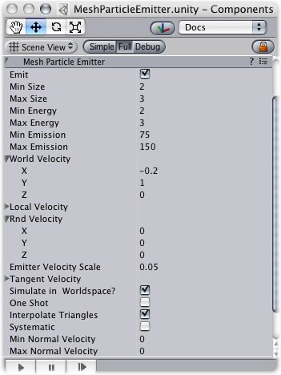
The Mesh Particle Emitter
Here is how to create a Mesh Particle Emitter.
| Property: | Function: |
|---|---|
| If enabled, the emitter will emit particles. | |
| The minimum size each particle can be at the time when it is spawned. | |
| The maximum size each particle can be at the time when it is spawned. | |
| The minimum lifetime of each particle, measured in seconds. | |
| The maximum lifetime of each particle, measured in seconds. | |
| The minimum number of particles that will be spawned every second. | |
| The maximum number of particles that will be spawned every second. | |
| The starting speed of particles in world space, along X, Y, and Z. | |
| The starting speed of particles along X, Y, and Z, measured in the object's orientation. | |
| A random speed along X, Y, and Z that is added to the velocity. | |
| The amount of the emitter's speed that the particles inherit. | |
| If enabled, the particles don't move when the emitter moves. If false, when you move the emitter, the particles follow it around. | |
| If enabled, the particle numbers specified by min & max emission is spawned all at once. If disabled, the particles are generated in a long stream. | |
| If enabled, particles are spawned all over the mesh's surface. If disabled, particles are only spawned from the mesh's vertrices. | |
| If enabled, particles are spawned in the order of the vertices defined in the mesh. Although you seldom have direct control over vertex order in meshes, most 3D modelling applications have a very systematic setup when using primitives. It is important that the mesh contains no faces in order for this to work. | |
| Minimum amount that particles are thrown away from the mesh. | |
| Maximum amount that particles are thrown away from the mesh. |
Mesh Particle Emitters (MPEs) are used when you want more precise control over the spawn position & directions than the simpler Ellipsoid Particle Emitter gives you. They can be used for making advanced effects like flaming swords.
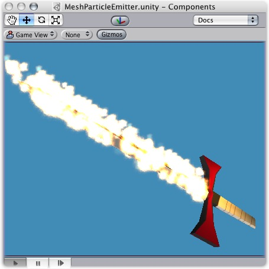
A flaming sword created with a Mesh Particle Emitter
MPEs work emitting particles at the vertices of the attached mesh. Therefore, the areas of your mesh that are more dense with polygons will be more dense with particle emission.
Particle Emitters work in conjunction with Particle Animators and Particle Renderers to create, manipulate, and display Particle Systems. All three components must be present on an object before the particles will behave correctly. When particles are being emitted, all different velocities are added together to create the final velocity.
Spawning properties like Size, Energy, Emission, and Velocity will give your particle system distinct personality when trying to achieve different effects. Having a small Size could simulate fireflies or stars in the sky. A large Size could simulate dust clouds in a musky old building.
Energy and Emission will control how long your particles remain onscreen and how many particles can appear at any one time. For example, a rocket might have high Emission to simulate density of smoke, and high Energy to simulate the slow dispersion of smoke into the air.
Velocity will control how your particles move. You might want to change your Velocity in scripting to achieve interesting effects, or if you want to simulate a constant effect like wind, set your X and Z Velocity to make your particles blow away.
If this is disabled, the position of each individual particle will always translate relative to the Position of the emitter. When the emitter moves, the particles will move along with it. If you have Simulate in World Space enabled, particles will not be affected by the translation of the emitter. For example, if you have a fireball that is spurting flames that rise, the flames will be spawned and float up in space as the fireball gets further away. If Simulate in World Space is disabled, those same flames will move across the screen along with the fireball.
This property will only apply if Simulate in World Space is enabled.
If this property is set to 1, the particles will inherit the exact translation of the emitter at the time they are spawned. If it is set to 2, the particles will inherit double the emitter's translation when they are spawned. 3 is triple the translation, etc.
One Shot emitters will create all particles within the Emission property all at once, and cease to emit particles over time. Here are some examples of different particle system uses with One Shot enabled or disabled:
Enabled
Disabled
Enabling your emitter to interpolate triangles will allow particles to be spawned outside of the mesh's vertices. This option is off by default, so particles will only be spawned at vertex locations.
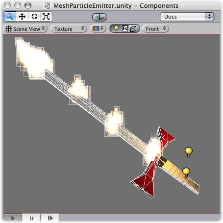
A flaming sword with Interpolate Triangles off (by default)
Enabling this option will spawn particles on and in-between vertices, essentially all over the mesh's surface (seen below).
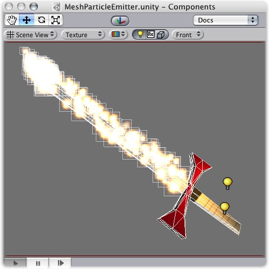
A flaming sword with Interpolate Triangles on
It bears repeating that even with Interpolate Triangles enabled, particles will still be denser in areas of your mesh that are more dense with polygons.
Enabling Systematic will cause your particles to be spawned in your mesh's vertex order. The vertex order is set by your 3D modeling application.
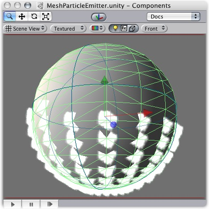
An MPE attached to a sphere with Systematic enabled
Normal Velocity controls the speed at which particles are emitted along the normal from where they are spawned.
For example, create a Mesh Particle system, use a cube mesh as the emitter, enable Interpolate Triangles, and set Normal Velocity Min and Max to 1. You will now see the particles emit from the faces of the cube in a straight line.
Particle Animators move your particles over time, you use them to apply wind, drag & color cycling to your particle systems.
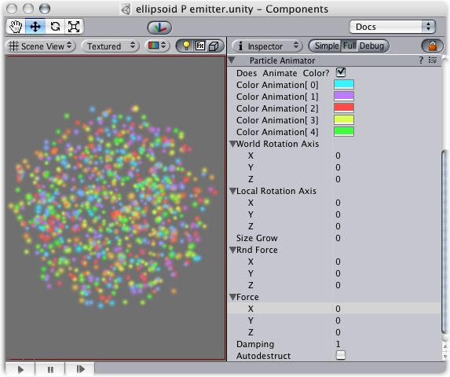
The Particle Animator
| Property: | Function: |
|---|---|
| If enabled, particles cycle their color over their lifetime. | |
| The 5 colors particles go through. All particles cycle over this - if some have a shorter life span than others, they will animate faster. | |
| An optional world-space axis the particles rotate around. Use this to make advanced spell effects or give caustic bubbles some life. | |
| An optional local-space axis the particles rotate around. Use this to make advanced spell effects or give caustic bubbles some life. | |
| Use this to make particles grow in size over their lifetime. As randomized forces will spread your particles out, it is often nice to make them grow in size so they don't fall apart. Use this to make smoke rise upwards, to simulate wind, etc. | |
| A random force added to particles every frame. Use this to make smoke become more alive. | |
| The force being applied every frame to the particles, measure relative to the world. | |
| How much particles are slowed every frame. A value of 1 gives no damping, while less makes them slow down. | |
| If enabled, the GameObject attached to the Particle Animator will be destroyed when all particles disappear. |
Particle Animators allow your particle systems to be dynamic. They allow you to change the color of your particles, apply forces and rotation, and choose to destroy them when they are finished emitting. For more information about Particle Systems, reference Mesh Particle Emitters, Ellipsoid Particle Emitters, and Particle Renderers.
If you would like your particles to change colors or fade in/out, enable them to Animate Color and specify the colors for the cycle. Any particle system that animates color will cycle through the 5 colors you choose. The speed at which they cycle will be determined by the Emitter's Energy value.
If you want your particles to fade in rather than instantly appear, set your first or last color to have a low Alpha value.

An Animating Color Particle System
Setting values in either the Local or World Rotation Axes will cause all spawned particles to rotate around the indicated axis (with the Transform's position as the center). The greater the value is entered on one of these axes, the faster the rotation will be.
Setting values in the Local Axes will cause the rotating particles to adjust their rotation as the Transform's rotation changes, to match its local axes.
Setting values in the World Axes will cause the particles' rotation to be consistent, regardless of the Transform's rotation.
You use force to make particles accelerate in the direction specified by the force.
Damping (Drag) can be used to decelerate or accelerate without changing their direction.
A value of 1 means no damping is applied, the particles will not slow down or accelerate.
A value of 0 means particles will stop immediately.
A value of 2 means particles will double their speed every second.
You can destroy the Particle System and any attached Game Object by enabling the AutoDestruct property. For example, if you have an oil drum, you can attach a Particle System that has Emit disabled and AutoDestruct enabled. On collision, you enable the Particle Emitter. The explosion will occur and after it is over, the Particle System and the oil drum will be destroyed and removed from the scene.
The Particle Collider is used to collide particles against other objects in the scene.
A shot of a very simple particle system with particle collider colliding with a cube
| Property: | Function: |
|---|---|
| Particles can be accelerated or slowed down when they collide against other objects. This factor is similar to the Particle Animator's damping. | |
| Amount of energy (in seconds) a particle should lose when colliding. If the energy goes below 0, the particle is killed | |
| If a particle's velocity drops below Min Kill Velocity because of a Collision, it will be eliminated. | |
| Which layers the particles collides against. | |
| When colliding every particle sends out a message that you can catch through scripting. |
To create a particle system with particle collider:
If Send Collision Message is enabled, any particles that are in a collision will send the message OnParticleCollision to both the particle's GameObject and the GameObject the particle collided with.
The Trail renderer is used to make trails behind objects in the scene as they move about.
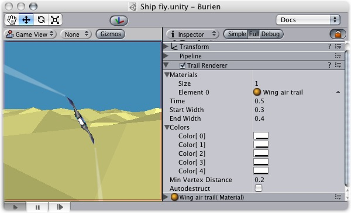
The Trail Renderer
| Property: | Function: |
|---|---|
| An array of materials used for rendering the trail. Particle shaders work the best for trails. | |
| The total number of Elements in the material array | |
| Reference to the Material used to render the trail. The total number of Elements is determined by the Size property. | |
| Length of the trail, measured in seconds. | |
| Width of the trail at the object's position. | |
| Width of the trail at the end. | |
| Array of colors to use over the length of the trail. You can also set alpha transparency with the colors. | |
| The trail's initial color. | |
| The 2nd color of the trail | |
| The 3rd color of the trail | |
| The 4th color of the trail | |
| The final color of the trail | |
| The minimum distance between anchor points of the trail. | |
| Enable this to make the object be destroyed when the object has been idle for Time in seconds |
The TrailRenderer is great for a trail behind a missile, or contrails from the tip of a plane's wings. It is good to add a general feeling of speed.
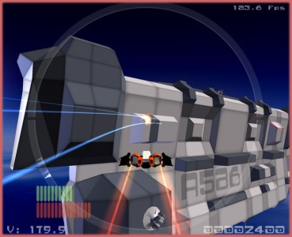
Practical uses of the Trail Renderer in Neil Carter's "Phoenix Final"
When using a TrailRenderer, no other filters in the Pipeline are used. It is best to create an empty GameObject, and attach a Trail Renderer as the only filter. You can then parent the Trail Renderer to whatever object you would like it to follow.
Trail Renderers should use a material that has a Particle shader. The texture used for the material should be of square dimensions (e.g. 256x256 or 512x512).
By setting the Trail's Start and End Width, along with the Time property, you can tune the way it is displayed and behaves. For example, you could create the wake behind a boat by setting the Start Width to 1, and the End Width to 2. These values would probably need to be fine-tuned for your game.
You can cycle your trail through 5 different color/opacity combinations. Using colors could make a bright green plasma trail gradually dim down to a dull grey dissipation, or cycle through the other colors of the rainbow. If you don't want to change the color, it can be very effective to change only the opacity of each color to make your trail fade in and out at the head and/or tail.
The Min Vertex Distance value determines how far the object that contains the trail must travel before a segment of the trail is solidified. Low values like 0.1 will create trail segments more often, creating smoother trails. Higher values like 1.5 will create segments that are more jagged in appearance. There is a slight performance trade off when using lower values/smoother trails, so try to use the maximum value to achieve the effect you are trying to create.
The Particle Renderer renders the particle system on screen.
The Particle Renderer
| Property: | Function: |
|---|---|
| Reference to a list of Materials that will be displayed in the position of each individual particle. | |
| The amount of stretching that is applied to the particles based on Camera movement. | |
Determines how the particles are rendered.
| |
| If Stretch Particles is set to Stretched, this value determines how long the particles are in their direction of motion. | |
| If Stretch Particles is set to Stretched, this value determines the rate at which particles will be stretched, based on their movement speed. | |
| If either of these are set, the UV coordinates of the particles will be generated for use with a tile animated texture. See the section on Animated Textures below. | |
| Number of frames located across the X axis | |
| Number of frames located across the Y axis | |
| How many times to loop the animation sequence. |
Particle Renderers are required for any Particle Systems to be displayed on the screen.

A Particle Renderer is what makes explosion appear on the screen
When setting up a particle renderer it is very important to use an appropriate material and shader. Most of the time you want to use a material with one of the builtin Particle shaders. There are some premade materials in the Standard Assets/Particles/Sources folder.
Creating a new material is easy:
By default particles are rendered billboarded. That is simple square sprites. This is good for smoke and explosions and most other particle effects.
Particles can be made to either stretch with the velocity. This is useful for sparks, lightning or laser beam. Length Scale and Velocity Scale affects how long the stretched particle will be.
Sorted Billboard can be used to make all particles sort by depth. Sometimes this is necessary, mostly when using Alpha Blended particle shaders. This can be expensive and should only be used if it really makes a quality difference when rendering.
Particle systems can be rendered with an animated tile texture. To use this feature, make the texture out of a grid of images. As the particles go thorough their life cycle, they will cycle through the images. This is good for adding more life to your particles, or making small rotating debris pieces.
The line renderer will draw free-floating lines in 3D space. Each renderer can draw many lines.
The line renderer does not render one pixel thin lines; it renders 3D lines that have width and can be textured. It uses the same algorithm for line rendering as Trail Renderer.

The Line Renderer
| Property: | Function: |
|---|---|
| The first material from this list is used to render the lines. | |
| An array of line information. For each element in this array, Unity draws one line. Each element has a number of subsettings. | |
| Array of 3D points to connect. | |
| List of parameters for each line | |
| Width at the first line position. | |
| Width at the last line position. | |
| Color at the first line position. | |
| Color at the last line position. | |
| If enabled, the object's position is ignored, and the lines are rendered around world origin. |
To create a line renderer:
The lines may seem to rotate as you move the camera. The line renderer completely ignores any other filters in the pipeline.
Unity has the next-generation Ageia PhysX physics engine built-in. This allows for unique emergent behaviour and is generally very cool.
To put an object under physics control, simply add a Rigidbody to it. When you do this, the object will be affected by gravity, and can collide with other objects in the world.
You use rigidbodies for things that the player can push around. Eg. crates or loose objects. You can also add joints to rigidbodies to make the behaviour more complex. For example to make a physical door or a crane with a swinging chain.
You also use rigidbodies to make vehicles, for example you can make cars using a rigidbody, 4 wheel colliders and a script applying wheel forces based on the user's input.
You can make airplanes by applying forces to the rigidbody from a script. Or you can create special vehicles or robots by adding various joints and applying forces from scripts.
Rigidbodies are usually used in combination with primitive colliders.
Kinematic rigidbodies are not affected by forces, gravity or collisions. They are driven explicitly by setting the position and rotation of the transform or animating them. They are used to interact with other non-kinematic rigidbodies.
They are used for three purposes:
Static colliders are used for level geometry which does not move around much. You add a mesh collider to your already existing graphical meshes. (Even better use the Import Settings Meshes Have Colliders check box) You can of course move around static colliders but if you move them around a lot you might want to add a kinematic rigidbody. There are two reasons why you want to make a static collider into a kinematic rigidbody instead:
You use character controllers if you want to make a humanoid character. This could be the main character in a third person platformer, FPS shooter or any enemy characters.
These controllers don't follow the rules of physics since it will not feel right. (In Doom you run 90 miles per hour, come to halt in one frame and turn on a dime). Instead a character controller performs collision detection to make sure your characters can slide along wall, walk stairs.
Character Controllers are not be affected by forces but they can push rigidbodies by applying forces to them from a script. Usually all humanoid characters are implemented using Character Controllers.
Character controllers are inherently unphysical, thus if you want to apply real physics - Swing on ropes, get pushed by big rocks - to your character you have to use a rigidbody, this will let you use joints and forces on your character. But be aware that tuning a rigidbody to feel right for a character is hard due to the unphysical way in which game characters are expected to move.
Select a component below to see the details:
Rigidbodies are the gateway for applying physics to your objects. The Rigidbody can receive forces and torque to make your objects move in a realistic way. Any GameObject must contain a Rigidbody to be influenced by gravity, act under added forces via scripting, or interact with other objects through the Ageia physX physics engine.

A GameObject with a Rigidbody component attached
| Property: | Function: |
|---|---|
| The weight of the object in kilogram. For stable simulation it is recommended to make masses not more or less than 100 times that of other rigid bodies. | |
| How much air resistance affects the object when moving from forces. 0 means no air resistance, and infinity makes the object stop moving immediately. | |
| How much air resistance affects the object when rotating from torque. 0 means no air resistance, and infinity makes the object stop rotating immediately. | |
| If checked, the object is affected by gravity. | |
| If checked, the object will not be driven by the physics engine, but can only be manipulated by its Transform. This is useful for moving platforms or if you want to animate a Rigidbody that has a Hinge Joint attached. |
Rigidbodies allow your GameObjects to act under control of the physics engine. This opens the gateway to realistic collisions, varied types of joints, and other very cool behaviors. Manipulating your objects by adding forces to a Rigidbody creates a very different feel and look than adjusting the Transform property directly. Generally, you shouldn't manipulate the Rigidbody and the Transform of the same object — just one or the other.
The biggest difference between manipulating the Transform or the Rigidbody is the use of forces. Rigidbodies can receive forces and torque, but Transforms cannot. Transforms can be translated and rotated, but this is not the same as using physics. You'll notice the distinct difference when adding you try it for yourself. Adding forces/torque to the Rigidbody will actually change the object's position and rotation of the Transform component. This is why you should only be using one or the other. Changing the Transform while using physics could cause problems with collisions and other calculations.
Rigidbodies must be explicitly added to your game object before they will be affected by the physics engine. You can add a Rigidbody to your selected object from Components->Dynamics->Rigidbody. Now your object is physics-ready; it will fall under gravity and can receive forces via scripting, but you may want to add a Collider or a Joint to get it to behave exactly how you want.
When an object is under physics control, it moves semi-independently of the way its transform parents move. If you move any parents, they will pull the Rigidbody child along with them. However, the Rigidbodies will still fall down due to gravity and react to collision detection.
To control your Rigidbodies, you will primarily use scripts to add forces or torque. You do this by calling AddForce and AddTorque on the object's Rigidbody. Remember that you shouldn't be directly altering the object's Transform when you are using physics.
For some situations, mainly creating ragdoll effects, it is neccessary to switch control of the object between animations and physics. For this purpose Rigidbodies can be marked Kinematic. While the Rigidbody is marked Kinematic, it will not be affected by collisions, forces, or any other part of the physics engine. This means that you will have to control the object by manipulating the Transform component directly. Kinematic Rigidbodies will affect other objects, but they themselves will not be affected by physics. For example, Joints which are attached to Kinematic objects will constrain any other Rigidbodies attached to them and Kinematic Rigidbodies will affect other Rigidbodies through collisions.
Colliders are another kind of component that must be added alongside the Rigidbody in order to allow collisions to occur. If two Rigidbodies bump into each other, the physics engine will not calculate a collision unless both objects also have a Collider attached. Collider-less Rigidbodies will simply pass through each other during physics simulation.

A Rigidbody with a Collider component attached
Add a collider with the Component -> Dynamics menu. View the Component page of any individual Collider for more specific information:
Compound Colliders are combinations of primitive Colliders, all together acting as a single Collider. They come in handy when you have a complex mesh to use in collisions, but cannot use a Mesh Collider. To create a Compound Collider, create child objects of your colliding object, then add a primitive Collider to each child object. This allows you to position, rotate, and scale each Collider easily and independently of each other.
A GameObject with a Rigidbody and multiple colliders attached
In the above picture, the terrain has a Mesh Collider attached. Mesh Colliders work the best for terrain or environments made from irregular shapes. The Rigidbody has 3 child Colliders attached: capsule, cube and sphere. When Play mode begins, the Rigidbody falls due to gravity, and the 3 child Colliders fall with it. The 3 Collision primitives collide with the Mesh Collider, and the Rigidbody eventually balances and comes to rest on the 3 Colliders.
Keep in mind, Mesh Colliders can't collide with each other, so the typical solution is to use primitive Colliders for any objects that move, and Mesh Colliders for static background objects.
The size value of the your object's mesh is much more important than the mass of the Rigidbody. If you find that your Rigidbody is not behaving exactly how you expect; it moves slowly, 'floats', or doesn't collide correctly; consider adjusting the scale of your mesh and/or the Rigidbody's Transform. Unity's default unit scale is 1 unit = 1 meter, so the scale of your imported mesh is maintained, and applied to physics calculations. For example, a crumbling skyscraper is going to fall apart very differently than a tower made of toy blocks, so objects of different sizes should be modeled to accurate scale.
If you are modelling a human make sure he is around 2 meters big in Unity. To check if your object has the right size compare it to the default cube. You can create a cube using GameObject->Create Other->Cube. The cube will be exactly 1 meter large. So your human should be twice as tall.
If you aren't able to adjust the mesh itself, you can change the global scale of each particular mesh by control-clicking on your imported mesh and selecting 'Import Settings' from the context menu. Here, you can change the scale and re-import your mesh.
If your game requires that your GameObject needs to be instantiated at different scales, it is perfectly okay to directly adjust the values of your Transform's scale. The down-side is that the physics simulation must do more work at the time the object is instantiated, and could cause a performance drop in your game. This isn't a terrible loss, but it is not as efficient as finalizing your scale with the other two options.
The Character Controller is mainly used for third-person or first-person player control that does not make use of rigidbody physics.

The Character Controller
| Property: | Function: |
|---|---|
| The character's capsule collider height. Changing this will scale the collider along the Y axis in both positive and negative directions. | |
| Length of the capsule collider's radius. This is essentially the width of the collider. | |
| Limits the collider to only climb slopes that are equal to or less than the indicated value. | |
| The character will step up a stair only if it is closer to the ground than the indicated value. | |
| If the character tries to move below the indicated value, it will not move at all. This can be used to reduce jitter. In most situations this value should be left at 0. | |
| Two colliders can penetrate each other as deep as their skin width. Larger skin widths reduce jitter. Low skin width can cause the character to get stuck. A good value is to make this value 10% of the radius. | |
| This will move the capsule collider in world space, and won't affect how the character pivots. |
The traditional Doom first person controls are not physically realistic. The character runs 90 miles per hour, comes to halt immediately and turns on a dime. Because it is so unrealistic, use of rigidbodies and physics to create this behavior is impractical and will feel wrong. The solution is the specialized Character Controller. It is simply a capsule shaped collider which can be told to move in some direction from a script. The controller will then carry out the movement but be constrained by collisions. It will slide along walls, walk up stairs (if they are lower than Step Offset) and walk on slopes within the Slope Limit.
The Controller does not react to forces on its own and it does not automatically push rigidbodies away.
If you want to push rigidbodies or objects with the Character Controller, you can apply forces to any objects that are collided with in the OnControllerColliderHit() function through scripting.
On the other hand, if you want your player character to be affected by physics then you might be better off using a {class-Rigidbody|rigidbody} instead of the Character Controller.
You can modify the Height and Radius to fit your character's mesh. It is recommended to always use around 2 meters for a human-like character. You can also modify the Center of the capsule in case your pivot point is not at the center of character.
Step Offset can affect this too, make sure that this value is between 0.1 and 0.4 for a 2 meter sized human.
Slope Limit should not be too smaller. Often using a value of 90 degrees works most robust. This will not make your character be able to climb up walls due to the capsule shape.
The Skin Width is one of the most critical properties to get right when tuning your Character Controller. If your character gets stuck it is most likely because your Skin Width is too small. The Skin Width will let objects slightly penetrate the controller but it removes jitter and prevents it from getting stuck. It's good practice to keep your Skin Width at least greater than 0.01 and more than 10% of the Radius.
It is recommended to keep Min Move Distance at zero.
See the Character Controller script reference here
You can download an example project showing pre-setup animated and moving character controllers here.
The Box Collider is a basic cube-shaped collision primitive.
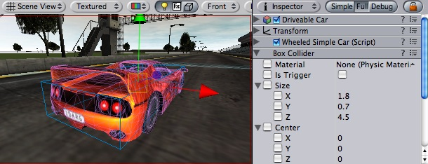
Box collider here is used to approximate car's hull
| Property: | Function: |
|---|---|
| Reference to the PhysicMaterial that determines how this Collider interacts with others. | |
| If enabled, this Collider is used for triggering events, and is ignored by the physics engine. | |
| The size of the collider in the X, Y, Z directions. | |
| The position of the collider in the object's local space. |
The Box Collider can be resized into different shapes of rectangular prisms. It works great for doors, walls, platforms, etc. It is also effective as a human torso in a ragdoll or car hull in a vehicle. Of course, it works perfectly for just boxes and crates as well!

A standard Box Collider
Colliders work with Rigidbodies to bring physics in Unity to life. Whereas Rigidbodies allow objects to be controlled by physics, Colliders allow objects to collide with each other. Colliders must be added to objects independently of Rigidbodies. A Collider does not necessarily need a Rigidbody attached, but a Rigidbody must be attached in order for the object to react to collisions.
When a collision between two Colliders occurs and if at least one of them has a Rigidbody attached, three collision messages are sent out to the objects attached to them. These events can be handled in scripting, and allow you to create unique behaviors with or without making use of the built-in Ageia physX engine.
An alternative way of using Colliders is to mark them as a Trigger, just check the IsTrigger property checkbox in the Inspector. Triggers are effectively ignored by the physics engine, and have a unique set of three trigger messages that are sent out when a collision with a Trigger occurs. Triggers are useful for triggering other events in your game, like cutscenes, automatic door opening, displaying tutorial messages, etc. Use your imagination!
Be aware that in order for two Triggers to send out trigger events when they collide, one of them must be attached to a Rigidbody. For a Trigger to collide with a normal Collider, one of them must have a Rigidbody attached. For a detailed chart of different types of collisions, see the collision action matrix in the Advanced section below.
Friction, bouncyness and softness is defined in the physic material. The Standard Assets contain the most common physic materials. To use one of them click on the material popup and select eg. Ice. You can also create your own physic materials and tweak all friction values.
Compound Colliders are combinations of primitive Colliders, all together acting as a single Collider. They come in handy when you have a complex mesh to use in collisions, but cannot use a Mesh Collider. To create a Compound Collider, create child objects of your colliding object, then add a primitive Collider to each child object. This allows you to position, rotate, and scale each Collider easily and independently of each other.
A GameObject with a Rigidbody and multiple colliders attached
In the above picture, the terrain has a Mesh Collider attached. Mesh Colliders work the best for terrain or environments made from irregular shapes. The Rigidbody has 3 child Colliders attached: capsule, cube and sphere. When Play mode begins, the Rigidbody falls due to gravity, and the 3 child Colliders fall with it. The 3 Collision primitives collide with the Mesh Collider, and the Rigidbody eventually balances and comes to rest on the 3 Colliders.
Keep in mind, Mesh Colliders can't collide with each other, so the typical solution is to use primitive Colliders for any objects that move, and Mesh Colliders for static background objects.
There are numerous different combinations of collisions that can happen in Unity. Each game is unique, and different combinations may work better for different types of games. If you're using physics in your game, it will be very helpful to understand the different basic Collider types, their common uses, and how they interact with other types of objects.
These are Game Objects that do not have a Rigidbody attached, but do have a Collider attached. These objects should remain still, or move very little. These work great for your environment geometry. They will not move if a Rigidbody collides with them.
These Game Objects contain both a Rigidbody and a Collider. They are completely affected by the physics engine through scripted forces and collsions. They might collide with a Game Object that only contains a Collider. These will likely be your primary type of Object in games that use physics.
This Game Object contains a Collider and a Rigidbody which is marked IsKinematic. To move this Object, you modify its Transform component, rather than applying forces. They're similar to Static Colliders but will work better when you want to move the Collider around frequently. There are some other specialized scenarios for using this Object.
This object can be used for circumstances in which you would normally want a Static Collider to send a trigger event. Since a Trigger must have a Rigidbody attached, you should add a Rigidbody, then check IsKinematic. This will prevent your Object from moving from physics influence, and allow you to receive trigger events when you want to.
Kinematic Rigidbodies can easily be turned on and off. This is great for creating ragdolls, when you normally want a character to follow an animation, then turn into a ragdoll when a collision occurs, prompted by an explosion or anything else you choose. When this happens, simply turn all your Kinematic Rigidbodies into normal Rigidbodies through scripting.
If you have Rigidbodies come to rest, so they are not moving for some time, they will "fall asleep". That is, they will not be calculated during the physics update since they are not going anywhere. If you move a Kinematic Rigidbody out from underneath normal Rigidbodies that are at rest on top of it, the sleeping Rigidbodies will "wake up" and be correctly calculated again in the physics update. So if you have a lot of Static Colliders that you want to move around and have different object fall on them correctly, use Kinematic Rigidbody Colliders.
Depending on the configurations of the two colliding Objects, a number of different actions can occur. The chart below outlines what you can expect from two colliding Objects, based on the components that are attached to them. Some of the combinations only cause one of the two Objects to be affected by the collision, so keep the standard rule in mind — physics will not be applied to objects that do not have Rigidbodies attached.
Collision detection occurs and messages are sent upon collision
| ||||||
| Static Collider | Rigidbody Collider | Kinematic Rigidbody Collider | Static Trigger Collider | Rigidbody Trigger Collider | Kinematic Rigidbody Trigger Collider | |
| Static Collider | • | |||||
| Rigidbody Collider | • | • | • | |||
| Kinematic Rigidbody Collider | • | |||||
| Static Trigger Collider | ||||||
| Rigidbody Trigger Collider | ||||||
| Kinematic Rigidbody Trigger Collider | ||||||
Trigger messages are sent upon collision
| ||||||
| Static Collider | Rigidbody Collider | Kinematic Rigidbody Collider | Static Trigger Collider | Rigidbody Trigger Collider | Kinematic Rigidbody Trigger Collider | |
| Static Collider | • | •
| ||||
| Rigidbody Collider | • | • | •
| |||
| Kinematic Rigidbody Collider | • | • | •
| |||
| Static Trigger Collider | • | • | • | •
| ||
| Rigidbody Trigger Collider | • | • | • | • | • | •
|
| Kinematic Rigidbody Trigger Collider | • | • | • | • | • | • |
The Sphere Collider is a basic sphere-shaped collision primitive.

(Image of a Sphere Collider in Inspector)
| Property: | Function: |
|---|---|
| Reference to the PhysicMaterial that determines how this Collider interacts with others. | |
| If enabled, this Collider is used for triggering events, and is ignored by the physics engine. | |
| The size of the collider. | |
| The position of the collider in the object's local space. |
The Sphere Collider can be resized to uniform scale, but not along individual axes. It works great for falling boulders, ping pong balls, marbles, etc.

A standard Sphere Collider
Colliders work with Rigidbodies to bring physics in Unity to life. Whereas Rigidbodies allow objects to be controlled by physics, Colliders allow objects to collide with each other. Colliders must be added to objects independently of Rigidbodies. A Collider does not necessarily need a Rigidbody attached, but a Rigidbody must be attached in order for the object to react to collisions.
When a collision between two Colliders occurs and if at least one of them has a Rigidbody attached, three collision messages are sent out to the objects attached to them. These events can be handled in scripting, and allow you to create unique behaviors with or without making use of the built-in Ageia physX engine.
An alternative way of using Colliders is to mark them as a Trigger, just check the IsTrigger property checkbox in the Inspector. Triggers are effectively ignored by the physics engine, and have a unique set of three trigger messages that are sent out when a collision with a Trigger occurs. Triggers are useful for triggering other events in your game, like cutscenes, automatic door opening, displaying tutorial messages, etc. Use your imagination!
Be aware that in order for two Triggers to send out trigger events when they collide, one of them must be attached to a Rigidbody. For a Trigger to collide with a normal Collider, one of them must have a Rigidbody attached. For a detailed chart of different types of collisions, see the collision action matrix in the Advanced section below.
Friction, bouncyness and softness is defined in the physic material. The Standard Assets contain the most common physic materials. To use one of them click on the material popup and select eg. Ice. You can also create your own physic materials and tweak all friction values.
Compound Colliders are combinations of primitive Colliders, all together acting as a single Collider. They come in handy when you have a complex mesh to use in collisions, but cannot use a Mesh Collider. To create a Compound Collider, create child objects of your colliding object, then add a primitive Collider to each child object. This allows you to position, rotate, and scale each Collider easily and independently of each other.
A GameObject with a Rigidbody and multiple colliders attached
In the above picture, the terrain has a Mesh Collider attached. Mesh Colliders work the best for terrain or environments made from irregular shapes. The Rigidbody has 3 child Colliders attached: capsule, cube and sphere. When Play mode begins, the Rigidbody falls due to gravity, and the 3 child Colliders fall with it. The 3 Collision primitives collide with the Mesh Collider, and the Rigidbody eventually balances and comes to rest on the 3 Colliders.
Keep in mind, Mesh Colliders can't collide with each other, so the typical solution is to use primitive Colliders for any objects that move, and Mesh Colliders for static background objects.
There are numerous different combinations of collisions that can happen in Unity. Each game is unique, and different combinations may work better for different types of games. If you're using physics in your game, it will be very helpful to understand the different basic Collider types, their common uses, and how they interact with other types of objects.
These are Game Objects that do not have a Rigidbody attached, but do have a Collider attached. These objects should remain still, or move very little. These work great for your environment geometry. They will not move if a Rigidbody collides with them.
These Game Objects contain both a Rigidbody and a Collider. They are completely affected by the physics engine through scripted forces and collsions. They might collide with a Game Object that only contains a Collider. These will likely be your primary type of Object in games that use physics.
This Game Object contains a Collider and a Rigidbody which is marked IsKinematic. To move this Object, you modify its Transform component, rather than applying forces. They're similar to Static Colliders but will work better when you want to move the Collider around frequently. There are some other specialized scenarios for using this Object.
This object can be used for circumstances in which you would normally want a Static Collider to send a trigger event. Since a Trigger must have a Rigidbody attached, you should add a Rigidbody, then check IsKinematic. This will prevent your Object from moving from physics influence, and allow you to receive trigger events when you want to.
Kinematic Rigidbodies can easily be turned on and off. This is great for creating ragdolls, when you normally want a character to follow an animation, then turn into a ragdoll when a collision occurs, prompted by an explosion or anything else you choose. When this happens, simply turn all your Kinematic Rigidbodies into normal Rigidbodies through scripting.
If you have Rigidbodies come to rest, so they are not moving for some time, they will "fall asleep". That is, they will not be calculated during the physics update since they are not going anywhere. If you move a Kinematic Rigidbody out from underneath normal Rigidbodies that are at rest on top of it, the sleeping Rigidbodies will "wake up" and be correctly calculated again in the physics update. So if you have a lot of Static Colliders that you want to move around and have different object fall on them correctly, use Kinematic Rigidbody Colliders.
Depending on the configurations of the two colliding Objects, a number of different actions can occur. The chart below outlines what you can expect from two colliding Objects, based on the components that are attached to them. Some of the combinations only cause one of the two Objects to be affected by the collision, so keep the standard rule in mind — physics will not be applied to objects that do not have Rigidbodies attached.
Collision detection occurs and messages are sent upon collision
| ||||||
| Static Collider | Rigidbody Collider | Kinematic Rigidbody Collider | Static Trigger Collider | Rigidbody Trigger Collider | Kinematic Rigidbody Trigger Collider | |
| Static Collider | • | |||||
| Rigidbody Collider | • | • | • | |||
| Kinematic Rigidbody Collider | • | |||||
| Static Trigger Collider | ||||||
| Rigidbody Trigger Collider | ||||||
| Kinematic Rigidbody Trigger Collider | ||||||
Trigger messages are sent upon collision
| ||||||
| Static Collider | Rigidbody Collider | Kinematic Rigidbody Collider | Static Trigger Collider | Rigidbody Trigger Collider | Kinematic Rigidbody Trigger Collider | |
| Static Collider | • | •
| ||||
| Rigidbody Collider | • | • | •
| |||
| Kinematic Rigidbody Collider | • | • | •
| |||
| Static Trigger Collider | • | • | • | •
| ||
| Rigidbody Trigger Collider | • | • | • | • | • | •
|
| Kinematic Rigidbody Trigger Collider | • | • | • | • | • | • |
The Capsule Collider is made of two half-spheres joined together by a cylinder. It is the same shape as the Capsule primitive.
(Image of a rocket using a Capsule Collider for detecting impact)
| Property: | Function: |
|---|---|
| Reference to the PhysicMaterial that determines how this Collider interacts with others. | |
| If enabled, this Collider is used for triggering events, and is ignored by the physics engine. | |
| The radius of the Collider. | |
| The total height of the capsule. | |
| The axis of the capsule's lengthwise orientation in the object's local space. | |
| The position of the Collider in the object's local space. |
You can adjust the Capsule Collider's radius and height independently of each other. It is used in the CharacterController and works great for poles, or can be combined with other Colliders for unusual shapes.
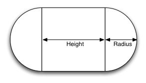
A standard Capsule Collider
Colliders work with Rigidbodies to bring physics in Unity to life. Whereas Rigidbodies allow objects to be controlled by physics, Colliders allow objects to collide with each other. Colliders must be added to objects independently of Rigidbodies. A Collider does not necessarily need a Rigidbody attached, but a Rigidbody must be attached in order for the object to react to collisions.
When a collision between two Colliders occurs and if at least one of them has a Rigidbody attached, three collision messages are sent out to the objects attached to them. These events can be handled in scripting, and allow you to create unique behaviors with or without making use of the built-in Ageia physX engine.
An alternative way of using Colliders is to mark them as a Trigger, just check the IsTrigger property checkbox in the Inspector. Triggers are effectively ignored by the physics engine, and have a unique set of three trigger messages that are sent out when a collision with a Trigger occurs. Triggers are useful for triggering other events in your game, like cutscenes, automatic door opening, displaying tutorial messages, etc. Use your imagination!
Be aware that in order for two Triggers to send out trigger events when they collide, one of them must be attached to a Rigidbody. For a Trigger to collide with a normal Collider, one of them must have a Rigidbody attached. For a detailed chart of different types of collisions, see the collision action matrix in the Advanced section below.
Friction, bouncyness and softness is defined in the physic material. The Standard Assets contain the most common physic materials. To use one of them click on the material popup and select eg. Ice. You can also create your own physic materials and tweak all friction values.
Compound Colliders are combinations of primitive Colliders, all together acting as a single Collider. They come in handy when you have a complex mesh to use in collisions, but cannot use a Mesh Collider. To create a Compound Collider, create child objects of your colliding object, then add a primitive Collider to each child object. This allows you to position, rotate, and scale each Collider easily and independently of each other.
A GameObject with a Rigidbody and multiple colliders attached
In the above picture, the terrain has a Mesh Collider attached. Mesh Colliders work the best for terrain or environments made from irregular shapes. The Rigidbody has 3 child Colliders attached: capsule, cube and sphere. When Play mode begins, the Rigidbody falls due to gravity, and the 3 child Colliders fall with it. The 3 Collision primitives collide with the Mesh Collider, and the Rigidbody eventually balances and comes to rest on the 3 Colliders.
Keep in mind, Mesh Colliders can't collide with each other, so the typical solution is to use primitive Colliders for any objects that move, and Mesh Colliders for static background objects.
There are numerous different combinations of collisions that can happen in Unity. Each game is unique, and different combinations may work better for different types of games. If you're using physics in your game, it will be very helpful to understand the different basic Collider types, their common uses, and how they interact with other types of objects.
These are Game Objects that do not have a Rigidbody attached, but do have a Collider attached. These objects should remain still, or move very little. These work great for your environment geometry. They will not move if a Rigidbody collides with them.
These Game Objects contain both a Rigidbody and a Collider. They are completely affected by the physics engine through scripted forces and collsions. They might collide with a Game Object that only contains a Collider. These will likely be your primary type of Object in games that use physics.
This Game Object contains a Collider and a Rigidbody which is marked IsKinematic. To move this Object, you modify its Transform component, rather than applying forces. They're similar to Static Colliders but will work better when you want to move the Collider around frequently. There are some other specialized scenarios for using this Object.
This object can be used for circumstances in which you would normally want a Static Collider to send a trigger event. Since a Trigger must have a Rigidbody attached, you should add a Rigidbody, then check IsKinematic. This will prevent your Object from moving from physics influence, and allow you to receive trigger events when you want to.
Kinematic Rigidbodies can easily be turned on and off. This is great for creating ragdolls, when you normally want a character to follow an animation, then turn into a ragdoll when a collision occurs, prompted by an explosion or anything else you choose. When this happens, simply turn all your Kinematic Rigidbodies into normal Rigidbodies through scripting.
If you have Rigidbodies come to rest, so they are not moving for some time, they will "fall asleep". That is, they will not be calculated during the physics update since they are not going anywhere. If you move a Kinematic Rigidbody out from underneath normal Rigidbodies that are at rest on top of it, the sleeping Rigidbodies will "wake up" and be correctly calculated again in the physics update. So if you have a lot of Static Colliders that you want to move around and have different object fall on them correctly, use Kinematic Rigidbody Colliders.
Depending on the configurations of the two colliding Objects, a number of different actions can occur. The chart below outlines what you can expect from two colliding Objects, based on the components that are attached to them. Some of the combinations only cause one of the two Objects to be affected by the collision, so keep the standard rule in mind — physics will not be applied to objects that do not have Rigidbodies attached.
Collision detection occurs and messages are sent upon collision
| ||||||
| Static Collider | Rigidbody Collider | Kinematic Rigidbody Collider | Static Trigger Collider | Rigidbody Trigger Collider | Kinematic Rigidbody Trigger Collider | |
| Static Collider | • | |||||
| Rigidbody Collider | • | • | • | |||
| Kinematic Rigidbody Collider | • | |||||
| Static Trigger Collider | ||||||
| Rigidbody Trigger Collider | ||||||
| Kinematic Rigidbody Trigger Collider | ||||||
Trigger messages are sent upon collision
| ||||||
| Static Collider | Rigidbody Collider | Kinematic Rigidbody Collider | Static Trigger Collider | Rigidbody Trigger Collider | Kinematic Rigidbody Trigger Collider | |
| Static Collider | • | •
| ||||
| Rigidbody Collider | • | • | •
| |||
| Kinematic Rigidbody Collider | • | • | •
| |||
| Static Trigger Collider | • | • | • | •
| ||
| Rigidbody Trigger Collider | • | • | • | • | • | •
|
| Kinematic Rigidbody Trigger Collider | • | • | • | • | • | • |
The Mesh Collider takes a Mesh Asset and builds its Collider based on that mesh. It is far more accurate for collision detection than using primitives for complicated meshes, but it cannot collide with other Mesh Colliders.

A Mesh Collider used on the flag tower object
| Property: | Function: |
|---|---|
| Reference to the PhysicMaterial that determines how this Collider interacts with others. | |
| If enabled, this Collider is used for triggering events, and is ignored by the physics engine. | |
| Reference to the Mesh to use for collisions. | |
| When this is enabled, collision mesh normals are smoothed. You should enable this on smooth surfaces eg. rolling terrain without hard edges to make sphere rolling smoother. |
The Mesh Collider builds its collision representation from the Mesh attached to the GameObject, and reads the properties of the attached Transform to set its position and scale correctly.
Collision meshes use backface culling. If an object collides with a mesh that will be back face culled graphically it will also not collide with it physically.
Colliders work with Rigidbodies to bring physics in Unity to life. Whereas Rigidbodies allow objects to be controlled by physics, Colliders allow objects to collide with each other. Colliders must be added to objects independently of Rigidbodies. A Collider does not necessarily need a Rigidbody attached, but a Rigidbody must be attached in order for the object to react to collisions.
When a collision between two Colliders occurs and if at least one of them has a Rigidbody attached, three collision messages are sent out to the objects attached to them. These events can be handled in scripting, and allow you to create unique behaviors with or without making use of the built-in Ageia physX engine.
An alternative way of using Colliders is to mark them as a Trigger, just check the IsTrigger property checkbox in the Inspector. Triggers are effectively ignored by the physics engine, and have a unique set of three trigger messages that are sent out when a collision with a Trigger occurs. Triggers are useful for triggering other events in your game, like cutscenes, automatic door opening, displaying tutorial messages, etc. Use your imagination!
Be aware that in order for two Triggers to send out trigger events when they collide, one of them must be attached to a Rigidbody. For a Trigger to collide with a normal Collider, one of them must have a Rigidbody attached. For a detailed chart of different types of collisions, see the collision action matrix in the Advanced section below.
Friction, bouncyness and softness is defined in the physic material. The Standard Assets contain the most common physic materials. To use one of them click on the material popup and select eg. Ice. You can also create your own physic materials and tweak all friction values.
There are numerous different combinations of collisions that can happen in Unity. Each game is unique, and different combinations may work better for different types of games. If you're using physics in your game, it will be very helpful to understand the different basic Collider types, their common uses, and how they interact with other types of objects.
These are Game Objects that do not have a Rigidbody attached, but do have a Collider attached. These objects should remain still, or move very little. These work great for your environment geometry. They will not move if a Rigidbody collides with them.
These Game Objects contain both a Rigidbody and a Collider. They are completely affected by the physics engine through scripted forces and collsions. They might collide with a Game Object that only contains a Collider. These will likely be your primary type of Object in games that use physics.
This Game Object contains a Collider and a Rigidbody which is marked IsKinematic. To move this Object, you modify its Transform component, rather than applying forces. They're similar to Static Colliders but will work better when you want to move the Collider around frequently. There are some other specialized scenarios for using this Object.
This object can be used for circumstances in which you would normally want a Static Collider to send a trigger event. Since a Trigger must have a Rigidbody attached, you should add a Rigidbody, then check IsKinematic. This will prevent your Object from moving from physics influence, and allow you to receive trigger events when you want to.
Kinematic Rigidbodies can easily be turned on and off. This is great for creating ragdolls, when you normally want a character to follow an animation, then turn into a ragdoll when a collision occurs, prompted by an explosion or anything else you choose. When this happens, simply turn all your Kinematic Rigidbodies into normal Rigidbodies through scripting.
If you have Rigidbodies come to rest, so they are not moving for some time, they will "fall asleep". That is, they will not be calculated during the physics update since they are not going anywhere. If you move a Kinematic Rigidbody out from underneath normal Rigidbodies that are at rest on top of it, the sleeping Rigidbodies will "wake up" and be correctly calculated again in the physics update. So if you have a lot of Static Colliders that you want to move around and have different object fall on them correctly, use Kinematic Rigidbody Colliders.
Depending on the configurations of the two colliding Objects, a number of different actions can occur. The chart below outlines what you can expect from two colliding Objects, based on the components that are attached to them. Some of the combinations only cause one of the two Objects to be affected by the collision, so keep the standard rule in mind — physics will not be applied to objects that do not have Rigidbodies attached.
Collision detection occurs and messages are sent upon collision
| ||||||
| Static Collider | Rigidbody Collider | Kinematic Rigidbody Collider | Static Trigger Collider | Rigidbody Trigger Collider | Kinematic Rigidbody Trigger Collider | |
| Static Collider | • | |||||
| Rigidbody Collider | • | • | • | |||
| Kinematic Rigidbody Collider | • | |||||
| Static Trigger Collider | ||||||
| Rigidbody Trigger Collider | ||||||
| Kinematic Rigidbody Trigger Collider | ||||||
Trigger messages are sent upon collision
| ||||||
| Static Collider | Rigidbody Collider | Kinematic Rigidbody Collider | Static Trigger Collider | Rigidbody Trigger Collider | Kinematic Rigidbody Trigger Collider | |
| Static Collider | • | •
| ||||
| Rigidbody Collider | • | • | •
| |||
| Kinematic Rigidbody Collider | • | • | •
| |||
| Static Trigger Collider | • | • | • | •
| ||
| Rigidbody Trigger Collider | • | • | • | • | • | •
|
| Kinematic Rigidbody Trigger Collider | • | • | • | • | • | • |
The Wheel Collider is a special collider for grounded vehicles. It has built-in collision detection, wheel physics, and a slip-based tire friction model.

The Wheel Collider Component. Car model courtesy of ATI Technologies Inc.
| Property: | Function: |
|---|---|
| Center of the wheel in object local space. | |
| Radius of the wheel. | |
| Maximum extension distance of wheel suspension, measured in local space. Suspension always extends downwards the local Y-axis. | |
The suspension attempts to reach a target position by adding spring and damping forces.
| |
| The Mass of the wheel. | |
| Properties of tire friction when the wheel is rolling forward and sideways. See Wheel Friction Curves section below. |
The wheel's collision detection is performed by casting a ray from Center downwards the local Y-axis. The wheel has a Radius and can extend downwards according to Suspension Distance. The vehicle is controlled from scripting using the motorTorque, brakeTorque and steerAngle properties of the Wheel Collider component; see the Wheel Collider scripting reference for more information.
The Wheel Collider computes friction separately from the rest of physics engine, using a slip based friction model. This allows for more realistic behaviour, but also makes Wheel Colliders ignore standard Physic Material settings.
You do not turn or roll WheelCollider objects to control the car - the objects that have WheelCollider attached should always be fixed relative to the car itself. However, you might want to turn and roll the graphical wheel representations. The best way to do this is to setup separate objects for WheelColliders and visible wheels:

Wheel Collider objects are separated from visible wheel models
Because cars can achieve large velocities, getting race track collision geometry right is very important. Specifically, the collision mesh should not have small bumps or dents that make up the visible models (e.g. fence poles). Usually collision mesh for the race track is made separately from the visible mesh, making the collision mesh as smooth as possible. It also should not have thin objects - if you have a thin track border, make it wider in collision mesh (or completely remove the other side if the car can never go there).

Visible geometry (left) is much more complex than collision geometry (right)
Tire friction can be described by the Wheel Friction Curve shown below. There are separate curves for wheel's forward (rolling) direction and sideways direction. In both directions it is first determined how much the tire is slipping (based on the speed difference between the tire's rubber and the road). Then this slip value is used to find out tire force exerted on the contact point.
The curve takes a measure of tire slip as an input and gives a force as output. The curve is approximated by a two-piece spline. The first section goes from (0 , 0) to (ExtremumSlip , ExtremumValue), at which point the curve's tangent is zero. The second section goes from (ExtremumSlip , ExtremumValue) to (AsymptoteSlip , AsymptoteValue), where curve's tangent is again zero:
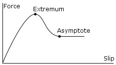
Typical shape of a wheel friction curve
The property of real tires is that for low slip they can exert high forces, since the rubber compensates for the slip by stretching. Later when the slip gets really high, the forces are reduced as the tire starts to slide or spin. Thus, tire friction curves have a shape like in the image above.
| Property: | Function: |
|---|---|
| Curve's extremum point. | |
| Curve's asymptote point. | |
| Multiplier for the Extremum Value and Asymptote Value (default is 1). Changes the stiffness of the friction. Setting this to zero will completely disable all friction from the wheel. Usually you modify stiffness at runtime to simulate various ground materials from scripting. |
The Hinge Joint groups together 2 Rigidbodies, constraining them to move like they are connected by a hinge. It is perfect for doors, but can also be used to model chains, pendulums, etc.
The Hinge Joint
| Property: | Function: |
|---|---|
| Optional reference to the Rigidbody that the joint is dependent upon. If not set, the joint connects to the world. | |
| The Position of the anchor around which the body swings. The Position is defined in local space. | |
| The Direction of the axis around which the body swings. The Axis is defined in local space. | |
| Spring makes the rigid body reach for a specific angle compared to its connected body. | |
| The force the object asserts to move into the position. | |
| the higher this value, the more the object will slow down. | |
| Target angle of the spring. The spring pulls towards this angle measured in degrees. | |
| The motor makes the object spin around. | |
| The speed the object tries to attain. | |
| The force applied in order to attain the speed. | |
| If enabled, the motor is never used to brake the spinning, only accelerate it. | |
| If enabled, the angle of the hinge will be restricted within the Min & Max values. | |
| The lowest angle the rotation can go. | |
| The highest angle the rotation can go. | |
| How much the object bounces when it hits the minimum stop. | |
| How much the object bounces when it hits the maximum stop. | |
| The force that needs to be applied for this joint to break. | |
| The torque that needs to be applied for this joint to break. |
A single Hinge Joint should be applied to an object per desired hinge. The hinge will rotate at the point specified by the Anchor property, moving around the specified Axis property. You DO NOT need to assign a Game Object to the joint's Connected Body property. You should only assign a Game Object to the Connected Body property if you want the joint's Transform to be dependent on the attached object's Transform.
Think about how the hinge of a door works. The Axis in this case is up, positive along the Y axis. The Anchor is placed somewhere at the intersection between door and wall. You would not need to assign the wall to the Connected Body, because the joint will be connected to the world by default.
A practical Hinge Joint with no Connected Body
Now think about a doggy door hinge. The doggy door's Axis would be sideways, positive along the relative X axis. The main door should be assigned as the Connected Body, so the doggy door's hinge is dependent on the main door's Transform.

A practical Hinge Joint with a proper Connected Body
Multiple Hinge Joints can also be strung together to create a chain. Add a joint to each link in the chain, and attach the next link as a Connected Body. The result should be similar to the following picture.
A Nunchaku made exclusively with primitives and Hinge Joints
Hinge Joints can be implemented as axles on vehicles, as seen here in Forest Johnson's racing game. However, it's often better just to use a Wheel Collider for vehicles.

The Spring Joint groups together 2 Rigidbodies, constraining them to move like they are connected by a spring.
The Spring Joint
| Property: | Function: |
|---|---|
| Optional reference to the Rigidbody that the joint is dependent upon. | |
| Position in the object's local space (at rest) that defines the center of the joint. | |
| Position of the joint's center along the X axis. | |
| Position of the joint's center along the Y axis. | |
| Position of the joint's center along the Z axis. | |
| Strength of the spring. The farther from the Anchor, the stronger the spring will pull. | |
| Amount that the spring is reduced when active. | |
| Distances greater than this will not cause the Spring to activate. | |
| Distances less than this will not cause the Spring to activate. | |
| The force that needs to be applied for this joint to break. | |
| The torque that needs to be applied for this joint to break. |
Spring Joints allow you to define a point in 3D space that any particular object is drawn to. As an object travels further away from that point, the Spring Joint applies forces that will pull it back to its Anchor position. This creates an effect very similar to a rubber band or a slingshot.
You do not need to connect a Rigidbody for your joint to work. Use of Connected Rigidbodies depends on the situation, and the effect you are trying to achieve. Generally, you should only connect a Rigidbody if your object is dependent on it and the object will be moving and rotating. If there is no Connected Rigidbody, your Spring will connect to the world.
Spring is the strength of the Joint's force that draws the object back toward its designated Anchor. If this is 0, then there is no force that will pull on the object, and it will behave as if no Spring is attached at all.
Damper is the resistance encountered by the Spring force. The lower this is, the springier the object will be. As the Damper is increased, the amount of bounciness caused by the Spring will be reduced.
If the position of your object falls in-between the Min & Max Distances, then the spring will not affect your object. The position must be moved outside of these values for the Spring to activate.
The Fixed Joint
| Property: | Function: |
|---|---|
| Optional reference to the Rigidbody that the joint is dependent upon. If not set, the joint connects to the world. | |
| The force that needs to be applied for this joint to break. | |
| The torque that needs to be applied for this joint to break. |
Fixed Joints lock an object's movement to be dependent upon another object. This is somewhat similar to Parenting but is implemented through physics rather than object hierarchy. The best scenarios for using them are when you have objects that you want to easily break apart from each other, or connect two object's movement without parenting.
There may be scenarios in your game where you want objects to stick together permanently or temporarily. Fixed Joints may be a good component to use for these scenarios, since you will not have to script a change in your object's hierarchy to achieve the desired effect. The trade-off is that you must use Rigidbodies for any objects to want to use a Fixed Joint.
For example, if you want to use a "sticky grenade", you can write a script that will detect collision with another Rigidbody (like an enemy), and then create a Fixed Joint that will attach itself to that Rigidbody. Then as the enemy moves around, the joint will keep the grenade stuck to them.
You can use the Break Force and Break Torque properties to set limits for the joint's strength. If these are less than infinity, and a force/torque greater than these limits are applied to the object, its Fixed Joint will be destroyed and will no longer be confined by its restraints.
The Constant Force component is a quick utility for adding constant forces to a rigidbody. This works great for one shot objects like rockets, if you don't want it to start with a large velocity but instead accelerate.
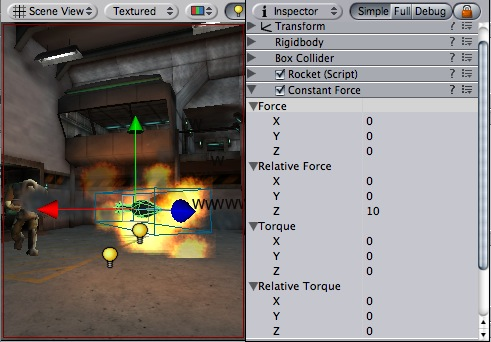
A rocket propelled forward by the constant force component
| Property: | Function: |
|---|---|
| The vector of a force to be applied in world space. | |
| The vector of a force to be applied in the objects local space. | |
| The vector of a torque, applied in world space. The object will begin spinning around this vector. The longer the vector is, the faster the rotation. | |
| The vector of a torque, applied in local space. The object will begin spinning around this vector. The longer the vector is, the faster the rotation. |
To make a rocket that accelerates forward set the relative force to be along the positive z-axis. Then use the rigidbody's drag property to make it not exceed a some maximum velocity. (The higher the drag the lower the maximum velocity will be.) In the rigidbody also make sure to turn off gravity so that the rocket will always stay on it's path.
The physic material is used to adjust friction and bouncing effects of colliding objects.
To create a physic material select the menu Assets -> Create -> Physic Material. Then drag the physic material from the project pane on a collider in the scene.

The Physic Material
| Property: | Function: |
|---|---|
| The friction used when an object is lying on a surface. Usually a value from 0 to 1. A value of zero feels like ice, a value of 1 will make it very hard to get the object moving. | |
| The friction used when already moving. Usually a value from 0 to 1. A value of zero feels like ice, a value of 1 will make it come to rest very quickly unless a lot of force / gravity pushes the object. | |
| How bouncy is the surface? A value of 0 will not bounce. A value of 1 will bounce without any loss of energy. | |
| How the friction of two colliding objects is combined. | |
| The two friction values are averaged. | |
| The smallest of the two values is used. | |
| The largest of the two values is used. | |
| The friction values are multiplied with each other. | |
| How the bouncyness of two colliding objects is combined. | |
| The two values are averaged. | |
| The smallest of the two values is used. | |
| The largest of the two values is used. | |
| The values are multiplied with each other. | |
| The direction of anisotropy. Anisotropic friction is enabled if the vector3 is not zero. Dynamic Friction 2 and Static Friction 2 will be applied along Friction Direction 2. | |
| If anisotropic friction is enabled, dynamicFriction2 will be applied along Friction Direction 2. | |
| If anisotropic friction is enabled, staticFriction2 will be applied along Friction Direction 2. | |
| If anisotropic friction is enabled, staticFriction2 will be applied along Friction Direction 2. | |
| If use Spring is checked, surface will be springy. | |
| The spring of the surface | |
| The spring coefficient. A high value will pull the surfaces towards the rest position faster. | |
| The damper coefficient. A high value will dampen the relative movement of the two surfaces. | |
| The rest position of the spring. |
Friction is the quantity which prevents surfaces from sliding off each other. This value is critical when trying to stack objects. Friction comes in two forms, dynamic and static. Static friction is used when the object is lying still. It will prevent the object from starting to move. If a large enough force is applied to the object it will start moving. At this point dynamic friction will come into play. Dynamic friction will now attempt to slow down the object while in contact with another.
Character Joint's are mainly used for Ragdoll effects. They are an extended ball-socket joint which allows you to limit the joint on each axis.
If you just want to set up a ragdoll go here.
The Character Joint
| Property: | Function: |
|---|---|
| Optional reference to the Rigidbody that the joint is dependent upon. If not set, the joint connects to the world. | |
| The twist axes. Visualized with the orange gizmo cone. | |
| The swing axis. Visualized with the green gizmo cone. | |
| The lower limit of the joint | |
| The force that needs to be applied for this joint to break. | |
| The torque that needs to be applied for this joint to break. |
Character joint's give you a lot of possibilities for contstraining motion like with a universal joint.
The twist axis (visualized with the orange gizmo) gives you most control over the limits as you can specify a lower and upper limit in degrees. (The limit angle is measured relative to the starting position.) A value of -30 in Low Twist Limit - Limit and 60 in High Twist Limit - Limit limits the rotation around the twist axis (orange gizmo) between -30 and 60 degrees.
The Swing 1 Limit limits the rotation around the swing axis (green axis). The limit angle is symmetric. Thus a value of eg. 30 will limit the rotation between -30 and 30.
The Swing 2 Limit axis doesn't have a gizmo but the axis is orthogonal to the 2 other axes. Just like the previous axis the limit is symmetric, thus a value of eg. 40 will limit the rotation around that axis between -40 and 40 degrees.
You can use the Break Force and Break Torque properties to set limits for the joint's strength. If these are less than infinity, and a force/torque greater than these limits are applied to the object, its Fixed Joint will be destroyed and will no longer be confined by its restraints.
These components implement sound in Unity.
The Audio Listener acts as a microphone-like device. It receives input from any given Audio Source in the scene and plays sounds through the computer speakers. It is traditionally attached to the main Camera.

The Audio Listener, attached to the Main Camera
The Audio Listener has no properties. It simply must be added to work.
The Audio Listener works in conjunction with Audio Sources, allowing you to create the aural experience of your games. When the Audio Listener is attached to an object in your scene, any Sources that are close enough to the Listener will be picked up and played through the player's computer speakers. Each scene can only have 1 Audio Listener to work properly.
As long as the Sources are in mono format, the Listener will automatically position the sound in the correct speaker, at the correct volume. Stereo Sources will automatically play in both speakers. For example, if your character walks off a street into a night club, the night club's music should probably be stereo, while the individual voices of characters in the club should be mono.
You should attach the Audio Listener to either the main camera or to the game object that represents the player. Try both to find what suits your game best.
The Audio Source takes an Audio Clip and plays it from a position in the world.

The Audio Source in the scene view and Inspector
| Property: | Function: |
|---|---|
| Reference to the sound clip file that will be played | |
| If enabled, the sound will start playing the moment the scene launches. If disabled, you need to start it using the Play() command from scripting. | |
| How loud the sound is at 1 world unit's (1 meter) distance from Audio Listener. | |
| The minimum value of the sound. No matter how far away you get, the sound will get softer. | |
| How loud the sound gets at the loudest. No matter how close you get, the sound will never get louder. | |
| How fast the sound fades. the higher the value, the shorter the range the Listener can hear the sound. | |
| Enable this to make the Audio Clip loop when it finishes playing. |
GameObjects are containers for all other Components. All objects in your game are inherently GameObjects.
GameObjects are containers for all other Components. All objects in your game are inherently GameObjects.
The GameObject viewed in the Inspector
GameObjects do not add any characteristics to the game themselves. Rather, they are containers that hold Components, which implement all actual functionality. For example, a Light is a Component which is attached to a GameObject. From scripts, Components can easily communicate with each other through message sending or the GetComponent(TypeName) method. This allows you to write small, reusable scripts that can be attached to multiple GameObjects and reused for different purposes.
Aside from being a container for the components, GameObjects have a Tag, a Layer and a Name.
Tags are used to quickly find objects, utilizing the Tag name. Layers can be used to cast rays, render, or apply lighting to certain groups of objects only. Tags and Layers can be set with the Tag Manager, found in Edit -> Project Settings -> Tags.
This group is for all components that handle object positioning.
The Transform component determines the physical location, rotation, and scale of all objects in the scene. Every object has a Transform.

The Transform component of the Game Object is viewable and editable in the Inspector
| Property: | Function: |
|---|---|
| Position of the Transform in X, Y, and Z coordinates | |
| Rotation of the Transform around the X, Y, and Z axes, measured in degrees | |
| Scale of the Transform along X, Y, and Z axes. Value "1" is the size at which the object was imported. |
Transforms are always manipulated in 3-D space using X, Y, and Z axes. In Unity, these axes are represented by the colors red, green, and blue respectively.

Color-coded relationship between 3 axes and Transform properties
Transform components can be directly manpulated using the Scene view or the Inspector. The Inspector will list the properties stated above for easy editing.

Translation along the X axis (Left/Right)
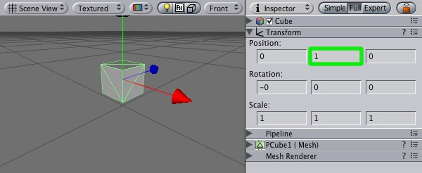
Translation along the Y axis (Up/Down)
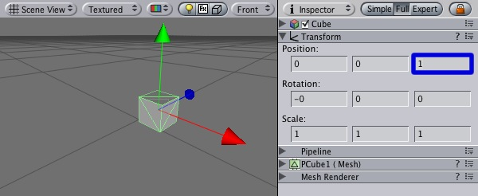
Translation along the Z axis (Forward/Backward)
You can also modify Transforms in your Scene by interacting with them, using the Move, Rotate, and Scale tools. These tools are located in the upper left-hand corner of the Unity UI.
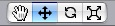
The View, Translate, Rotate, and Scale tools
The tools will be usable on any object in your scene. Click on the object, and you will see the tool gizmo appear around it. Depending on the current tool, the gizmo will look slightly different. Clicking the object will also cause the Transform component to become visible in the Inspector. If the Inspector does not display the Transform component or its properties, then you do not have an object highlighted in the scene view.

Different Gizmos for the 3 tools can be directly edited in Scene view
To manipulate the Transform, click and drag on one of the 3 gizmo axes, you'll notice its color changes to yellow. As you drag the mouse, you will see the object translate, rotate, or scale along the axis. When you release the mouse button, you'll notice that the axis remains yellow. You can click the middle mouse button and drag the mouse to manipulate the Transform around the yellow axis. To access all 3 axes at once click and drag the center point of all 3 gizmos.
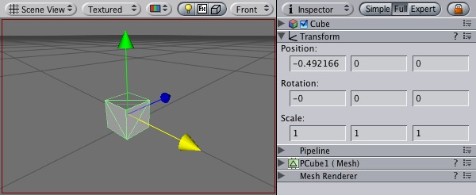
Any individual axis will change yellow when you click on it
Parenting is one of the most important concepts to understand when using Unity. It is a method of attaching two or more objects together, creating a "Parent" and a "Child" or "Children" Each object can have multiple children, but only one parent.
The principle behind parenting is simple; you can attach objects to each other - just like your arms are attached to your body. When you turn your body, your arms move. An object can only have one parent (just like each of your arms can only be attached to one body), but each object can have many children (your body does have two arms, after all).

Example of the Parenting concept
In the above example, we say that the arms are parented to the body, and the hands are parented to the arms. The scenes you make in Unity will contain collections of these Transform hierarchies. The topmost parent object is called the Root object. When you move, scale, or rotate a parent, all the changes in its Transform are applied to its children as well.
You can build compound objects by parenting multiple separate objects together, like the skeletal structure of a human ragdoll. You can also create small yet effective objects with single parents. For example, if you have a horror game that takes place at night, you can create an effective atmosphere with a flashlight. To create this object, you would parent a spotlight Transform to the flashlight Transform. Then, any alteration of the flashlight Transform will affect the spotlight, creating a convincing flashlight effect.
Creating and removing parents is performed in the Hierarchy window. The hierarchy window will display all the objects currently in your scene. To create a parent, drag the desired child object over the desired parent object in your Hierarchy, and release. You have then parented your child to its new parent. To remove the child from its parent, click and drag the child object outside of the parent object.
The scale of the Transform determines the difference between the size of your mesh in your modeling application, and the size of your mesh in Unity. The mesh's size in Unity (and therefore the Transform's scale) is very important, especially during physics simulation. There are 3 factors that can determine the scale of your object:
Ideally, you should not adjust the scale of your object in the Transform component. The best option is to create your models at real-life scale, so you won't have to change your Transform's scale. The second-best option is to adjust the scale at which your mesh is imported in the Import Settings for your individual mesh. Certain optimizations occur based on the import size, and instantiating an object that has an adjusted scale value can decrease performance. For more information, read through the Rigidbody component's section on optimizing scale.
This group handles all components that have to do with rendering in-game and user interface elements. Lighting and special effects are also included in this group.
Cameras are the devices that capture and display the world to the player. By customizing and manipulating cameras, you can make the presentation of your game truly unique. You can have an unlimited number of cameras in a scene. They can be set to render in any order, at any place on the screen, or only certain parts of the screen.

Unity's flexible Camera object
| Property: | Function: |
|---|---|
| Determines which parts of the screen will be cleared. This is handy when using multiple Cameras to draw different game elements. | |
| Color applied to the remaining screen after all elements in view have been drawn and there is no skybox. | |
| Four values that indicate where on the screen this camera view will be drawn, in Screen Coordinates. | |
| The beginning horizontal position that the camera view will be drawn. | |
| The beginning vertical position that the camera view will be drawn. | |
| The ending horizontal position that the camera view will be drawn. | |
| The ending vertical position that the camera view will be drawn. | |
| The closest point relative to the camera that drawing will occur. | |
| The furthest point relative to the camera that drawing will occur. | |
| Width of the Camera's view angle, measured in degrees along the local Y axis. | |
| Toggles the camera's capability to simulate perspective. | |
| The viewport size of the Camera when it is Orthographic. | |
| The camera's position in the draw order. Cameras with a higher depth will be drawn on top of cameras with a lower depth value. | |
| Include or omit layers of objects to be rendered by the Camera. Assign layers to your objects in the Inspector. | |
| Reference to a Render Texture that will contain the output of the Camera view |
Cameras are essential for displaying your game to the player. They can be customized, scripted, or parented to achieve just about any kind of effect imaginable. For a puzzle game, you might keep the Camera static for a full view of the puzzle. For a first-person shooter, you would parent the Camera to the player character, and place it at the character's eye level. For a racing game, you'd likely want to have the Camera follow your player's vehicle.
You can create multiple Cameras and assign each one to a different depth. Cameras are drawn from low depth to high depth. In other words, a Camera with a depth of 2 will be drawn on top of a Camera with a depth of 1. You can adjust the values of the Normalized View Port Rectangle property to resize and position the Camera's view onscreen. This can create multiple mini-views like missile cams, map views, rear-view mirrors, etc.

Multiple Cameras making use of Normalized View Port Rectangle
Each Camera stores a color and depth information when it renders its view. The portions of the screen that are not filled with a game object are empty, and will display the skybox by default. When you are using multiple Cameras, each one stores its own color and depth information in buffers, accumulating more data as each Camera renders. As any particular Camera in your scene renders its view, you can set the Clear Flags to clear different collections of the buffer information. This is done by choosing one of the four options:
This is the default setting. Any empty portions of the screen will display the current Camera's skybox. If the current Camera has no skybox set, it will default to the skybox chosen in the Render Settings (found in Edit -> Render Settings). It will then fall back to the Background Color.
Any empty portions of the screen will display the current Camera's Background Color.
For example, if you wanted to draw a player's gun without letting it get clipped inside the environment, you would set one Camera at Depth 0 to draw the environment, and another Camera at Depth 1 to draw the weapon alone. The weapon Camera's Clear Flags should be set to to "depth only". This will keep the graphical display of the environment on the screen, but discard all information about where each object exists in 3-D space. When the gun is drawn, the opaque parts will completely cover anything drawn, regardless of how close the gun is to the wall.

The gun is drawn last, after clearing the depth buffer of the cameras before it
This mode does not clear either the color or the depth buffer. The result is that each frame is drawn over the next, resulting in a smear-looking effect. This isn't typically used in games, and would likely be best used with a custom shader.
The Near and Far Clip Plane properties determine where the Camera's view begins and ends. The planes are laid out perpendicular to the Camera's direction and are measured from the its position. The Near plane is the closest location that will be rendered, and the Far plane is the furthest.
Far Clip Plane set to small versus large distance
The clipping planes also determine how depth buffer precision is distributed over the scene. In general, to get better precision you should move the Near plane as far as possible.
The Culling Mask is used for selectively rendering groups of objects using Layers. More information on using layers can be found here.
Commonly, it is good practice to put your User Interface on a different layer, then render it by itself with a separate camera set to render the UI layer by itself.
In order for the UI to display on top of the other Camera views, you'll also need to set the Clear Flags to "Depth only" and make sure that the UI Camera's Depth is higher than the other Cameras.
Normalized Viewport Rectangles are specifically for defining a certain portion of the screen that the current camera view will be drawn upon. You can put a map view in the lower-right hand corner of the screen, or a missile-tip view in the upper-left corner. With a bit of design work, you can use Viewport Rectangle to create some unique behaviors.
It's easy to create a two-player split screen effect using Normalized Viewport Rectangle. After you have created your two cameras, change player one's Ymin value to 0.5, and player two's Ymax: value to 0.5. This will make player one's camera display from halfway up the screen to the top, and player two's camera will start at the bottom and stop halfway up the screen.
Two-player display created with Normalized Viewport Rectangle
Marking a Camera as orthographic removes all perspective from the Camera's view.

A non-orthographic and orthographic camera viewports
This feature is only available for Unity Pro licenses. It will place the camera's view onto a Texture that can then be applied to another object. This makes it easy to create sports arena video monitors, surveillance cameras, reflections etc.
Render Texture used to create a live Arena-Cam
Lights will bring personality and flavor to your game. You use lights to illuminate the scenes and objects to create the perfect visual mood. Lights can be used to simulate the sun, match light, flashlights, gun-fire, or explosions, just to name a few.

The Light Component
There are three types of lights in Unity:
The three different light types in Unity
| Property: | Function: |
|---|---|
The current type of light object
| |
| The color of the light emitted | |
| Does the light diminish with increasing distance? If disabled, objects' brightness will "pop" as they enter and exit the light's region of influence. It can be useful to turn off when you want to do some special effects. If the light is directional, this property is ignored. | |
| How far light is emitted from the center of the object. | |
| If the light is a Spot light, this determines the angle of the cone in degrees. | |
| You can assign a texture to a light. The alpha channel of this texture is used as a mask that determines how bright the light is at different places. If the light is a Spot or a Directional light, this must be a 2D texture. If the light is a Point light, it must be a cubemap. | |
| If checked, a spherical halo of light will be drawn with a radius equal to Range. | |
| Optional reference to the Flare that will be rendered at the light's position. | |
Choose whether this light is rendered as a vertex light, pixel light, or determined automatically. For a detailed description of this tradoff, see Performance Considerations below. Options include
| |
| Use to selectively exclude groups of objects from being affected by the light; see Layers. |
There are three basic light types in Unity. Each type can be customized to fit your needs.
You can use a texture that contains an alpha channel and assign it to be projected from any of the light types. This texture then becomes the cookie. The cookie's alpha mask modulates the light amount, creating light and dark spots on surfaces. They are a great way af adding lots of complexity to a scene, and hence providing a lot of atmosphere.
All builtin shaders in Unity seamlessly work with any type of light (VertexLit type shaders ignore light cookies though).

Point lights shine out from a point in all directions. They are the most common lights in computer games - typically used for explosions, light bulbs, etc. They have an average cost on the graphics processor.
Point light cookies must be cubemaps with an alpha channel. This cubemap gets projected out in all directions.

Spot lights only shine in one direction, in a cone. They are Perfect for flashlights or car headlights. They cost the most expensive on the graphics processor.
The cookie is projected down the cone of the spot light. This is good for creating an effect of light shining through a window. It is very important that the texture is black at the edges and its wrapping mode is set to clamp. For more info on this, see Texture print STDERR "WARN: nonexistent page href="tiki-editpage.php?page=class-FileTexture" , removing link ";
Directional lights are used mainly in outdoor scenes for sun & moonlight. The light affect all surfaces of objects in your scene. They are the least expensive on the graphics processor.
With a directional light, the cookie is projected down the center of the light's Z axis. If you want to stretch it out over a large area, set the texture's wrapping mode to 'repeat' (select the texture in the project window, and in the Inspector for the texture instead of 'Clamp' select 'Repeat').
The above is a great way to add some quick detail to large outdoor scenes. You can even slide the light slowly over the scene to give the impression of moving clouds.
Lights can be rendered in one of two methods: vertex lighting and per-pixel lighting. Vertex lighting only calculates the lighting at the vertices of the game models, and interpolates the lighting over the surfaces of the models. Per-pixel lights are calculated at every screen pixel, and hence are much more expensive. Some older graphics cards only support vertex lighting.
Lights have a big impact on rendering speed - therefore a tradeoff has to be made betwen lighting quality and game speed. Since per-pixel lights are much more expensive than per-vertex lights, Unity will only render the brightest lights at per-pixel quality. The actual number of pixel lights can be set as in the Quality Settings.
You can explicitly control if a light should be rendered as a vertex or pixel light using the Render Mode setting of the light. By default Unity will classify the light automatically based on how much the object is affected by the light.
The actual lights that are rendered as pixel lights are determined on an object-by-object case. This means:
See here for more information about optimizing rendering performance.
For more information on creating cookies, please see the tutorial on how to create a Spot Light cookie here.
Projectors allow you to project an arbitrary material on all objects that intersect its frustum.

The Projector
| Property: | Function: |
|---|---|
| The Near clip plane of the Projector. Objects in front of the near clip plane will not be affected. | |
| The Far clip plane of the Projector. Objects beyond this distance will not be affected. | |
| The field of view in degrees. This is only used if the Projector is not Ortho Graphic. | |
| The Aspect Ratio of the Projector. This allows you to tune the height vs width of the Projector. | |
| If enabled, the Projector will be Ortho Graphic instead of perspective. | |
| The Ortho Graphic size of the Projection. this is only used if Is Ortho Graphic is turned on. | |
| The Material that will be Projected onto Objects. | |
| Objects that are in one of the Ignore Layers will not be affected. By default, Ignore Layers is none so all geometry that intersects the Projector frustum will be affected. |
With a projector you can:

A projector used to create a Blob Shadow for this hovercraft
If you want to create a simple shadow effect, simply drag the StandardAssets/Blob-Shadow/Blob shadow projector prefab into your scene. You can modify the material to use a different Blob shadow texture.
Halos are light areas around light sources, used to give the impression of small dust particles in the air.
A light with a Halo.
Halos use the Halo Texture set up in Render Settings. If none is set up, it uses a default one. A Light component can be setup to automatically show halo, without a separate Halo component.
| Property: | Function: |
|---|---|
| Color of the halo. | |
| Size of the halo. |
Lens flares simulate the effect of lights refracting inside camera lens. They are used to represent really bright lights or, more subtly, just to add a bit more atmosphere to your scene.
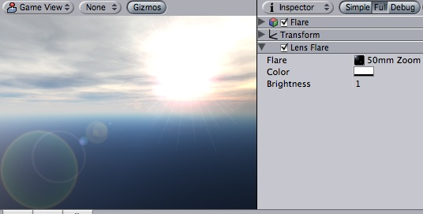
A lens flare over the skybox
The easiest way to setup a lens flare is just to assign Flare property of the Light. Unity contains a couple of flares in the Standard Assets package.
Otherwise, create an empty game object (Game Object->Create Empty), add this component to it (Component->Rendering->Lens Flare) and choose the flare in the Inspector.
To see the effect of lens flare in the Scene View, check the Fx button in the toolbar:
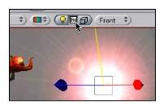
| Property: | Function: |
|---|---|
| A Flare to render. The flare defines all aspects of the lens flare's appearance. | |
| Some flares can be colorized to better fit in with your scene's mood. | |
| How large and bright the lens flare is. |
You can directly set flares as a property of a Light component, or set them up separately as Lens Flare component. If you attach them to a light, they will automatically track the position and direction of the light. To get more precise control, use this component.
A camera has to have a Flare Layer component attached to make flares visible (by default there is a flare layer in cameras, so you don't have to do anything special).
GUI Textures are displayed as flat images in 2D. They are made especially for User Interface elements, buttons, or decorations. Their positioning and scaling is performed along the x and y axes only, and they are measured in Screen Coordinates, rather than World Coordinates.

The GUI Texture
| Property: | Function: |
|---|---|
| Reference to the Texture2D that will be used as the texture's display. | |
| Value that will tint the Texture drawn on screen. | |
| Used for pixel-level control of the scaling and positioning of the GUI Texture. All values are measured relative to the position of the GUI Texture's Transform. | |
| Left-most pixel position of the texture. | |
| Bottom-most pixel position of the texture. | |
| Right-most pixel position of the texture. | |
| Top-most pixel position of the texture. | |
| Number of pixels from the left that are not affected by scale. | |
| Number of pixels from the right that are not affected by scale. | |
| Number of pixels from the top that are not affected by scale. | |
| Number of pixels from the bottom that are not affected by scale. |
To create a gui texture
GUI Textures are perfect for presenting game interface backgrounds, buttons, or other elements to the player. Through scripting, you can easily provide visual feedback for different "states" of the texture — when the mouse is hovering over the texture, or is actively clicking it for example. Here is the basic breakdown of how the GUI Texture is calculated:

Here's a real-world example of GUI Texture at work from Unity forum member Bampf's game Pawns.

The number of pixels that will not scale with the texture at each edge of the image. As you rarely know the resolution your game runs in, chances are your GUI will get scaled. Some GUI textures have a border at the edge that is meant to be an exact number of pixels. In order for this to work, set the border sizes to match those from the texture.
The purpose of the Pixel Inset is to prevent textures from scaling with screen resolution, and keeping thim in a fixed pixel size. This allows you to render a texture without any scaling. This means that players who run your game in higher resolutions will see your textures in smaller areas of the screen, allowing them to have more screen real-estate for your gameplay graphics.
To use it effectively, you need to set the scale of the GUI Texture's Transform to 0, 0, 0. Now, the Pixel Inset is in full control of the texture's size and you can set the Pixel Inset values to be the exact pixel size of your texture.
GUI Text displays text of any font you import in screen coordinates.
The GUI Text
| Property: | Function: |
|---|---|
| The string of text to display. | |
| Which point of the text shares the position of the Transform. | |
| How multiple lines are aligned within the GUIText. | |
| How much space will be in-between lines of text. | |
| How much space will be inserted for a tab '\t' character. As a multiplum of the space character offset. | |
| The font to use when rendering the text. | |
| Reference to the Material containing the characters to be drawn. If set, this property overrides the one in the Font asset. | |
| If enabled, all text characters will be drawn in the size of the imported font texture. If disabled, the characters will be resized based on the transform's scale. |
GUI Texts are used to print text onto the screen in 2D. The camera has to have a GUI Layer attached in order to render the text. Cameras include a GUI Layer by default, so don't remove it if you want to display a GUI Text. GUI Texts are positioned using only the X and Y axes. Rather than being positioned in World Coordinates, GUI Texts are positioned in Screen Coordinates, where (0,0) is the bottom-left and (1,1) is the top-right corner of the screen
To import a font see the Font class.
By default Fonts are rendered pixel correct. This makes them look crisp and they will stay the same size in pixels independent of the screen resolution.
Skyboxes are a wrapper around your entire scene that display the vast beyond of your world.
One of the default sky boxes found under Standard Assets/Skyboxes
| Property: | Function: |
|---|---|
| The Material used to render the skybox, which contains the 6 Skybox textures. This Material should use the Skybox shader, and each of the textures should be assigned to the proper global direction. |
Skyboxes are rendered before anything else in the scene in order to give the impression of complex scenery at the horizon. They are a box of 6 textures, one for each primary direction (+/-X, +/-Y, +/-Z).
You have 2 options for implementing Skyboxes. You can add them to an individual Camera (usually the main Camera) or you can set up a default Skybox in Render Settings's Skybox Material property. The Render Settings is most useful if you want all cameras in your scene to share the same Skybox.
Adding the Skybox component to a Camera is useful if you want to override the default skybox set up in the Render Settings. E.g. You might have two split screens and want the second camera to use a different skybox. To add a Skybox component to a Camera, click to highlight the camera and go to Component -> Rendering -> Skybox.
Unity's Standard Assets contain 6 pre setup Skybox materials. (Standard Assets/Skyboxes)
If you want to create a new Skybox see here.
A GUI Layer component is attached to a camera to enable rendering of 2D GUIs.
When a gui layer is attached to a camera it will simply render all gui elements in the scene.
You can enable and disable rendering GUI in a single camera by clicking on the check box of the GUI Layer in the inspector.
For more information about GUI elements see GUI Texture and GUI Text.
The Flare Layer component can be attached to cameras to make lens flares appear in the image. By default cameras have a Flare Layer already attached.
The Halo Layer can be attached to cameras to make Halo objects appear in the image. It has no properties of its own.
This group handles all render-to-texture based fullscreen image postprocessing effects. They are only available with the Pro Version of Unity. They add a lot to the look and feel of your game. Especially glow can make your game look a lot better without spending much time on artwork.
Glow (sometimes called Bloom) can dramatically enhance the rendered image by making overbright parts "glow" (e.g. sun, light sources, strong highlights).
Unity includes a Glow image postprocessing effect, and all builtin shaders are made to support it nicely. As with all image effects, Glow is available in Unity Pro only. Make sure to have the Pro Standard Assets installed.
Glow effect applied to the scene
Glow uses the alpha channel of the final image to represent "color brightness". All colors are treated as RGB, multiplied by the alpha channel. You can view the contents of the alpha channel in SceneView.
All builtin shaders write the following information to alpha:
Most of the time you'll want to do this to get reasonable glow:
Glow works on graphics cards with support for pixel shaders. Eg. GeForce FX 5200 or Radeon 8500 and up. All image effects automatically disable themselves when they can not run on an end-users graphics card.
Blur image effect blurs the rendered image in real-time.
As with the other image effects, Blur is only available in Unity Pro. Make sure to have the Pro Standard Assets installed.
Blur effect applied to the scene
| Property: | Function: |
|---|---|
| The amount of blurriness desired. Higher iteration count makes the image more blurry, but each additional iteration has some performance cost. | |
| Higher values will spread out the blur more at the same iteration count, but at some expense in quality. Usually values from 0.6 to 0.7 are a good compromise between quality and speed. |
Blur effect works only on graphics cards with support for pixel shaders. Eg. GeForce FX 5200 or Radeon 8500 and up. All image effects automatically disable themselves when they can not run on an end-users graphics card.
Unity has an image postprocessing effect that can simulate both TV and VCR noise.
As with the other image effects, Noise is only available in Unity Pro. Make sure to have the Pro Standard Assets installed.

Noise effect with high intensity applied to the scene
| Property: | Function: |
|---|---|
| If set, noise is more similar to TV noise. If not set, it more resembles VCR noise - it distorts color values in YUV space, so you also get hue changes, mostly towards magenta/green gues. | |
| The intensity of noise takes random values between Min and Max. | |
| The size of a single grain texture pixel in screen pixels. Increasing this will make noise grains larger. | |
| The intensity of additional scratch/dust takes random values between Min and Max. | |
| Scratches jump to different positions on the screen at this frames per second. | |
| While being in the same position, scratches can still jitter a bit. |
Noise effect works only on graphics cards with support for pixel shaders (model 2.0). Eg. GeForce FX 5200 or Radeon 9500 and up. All image effects automatically disable themselves when they can not run on an end-users graphics card.
Color correction allows you apply arbitrary color correction to your scene as a postprocessing effect (just like the Curves tool in Photoshop or Gimp). This page explains how to setup color correction in Photoshop and then apply exactly the same color correction at runtime in Unity.
Color Correction is only available in Pro version of Unity. Make sure to have the Pro Standard Assets installed.
Color correction applied to the scene to get strongly posterized look. Color ramp used (magnified) is shown at the right.
Color correction works by remapping the original image colors through the color ramp image (sized 256x1):
So for example, to invert the colors in the image you only need to flip the original color ramp horizontally (so that it goes from white to black instead of from black to white).
A simpler version of color remapping that only remaps based on luminance can be achieved with Grayscale image effect.
Color correction works only on graphics cards with support for pixel shaders (2.0). E.g. GeForce FX 5200 or Radeon 9500 and up. All image effects automatically disable themselves when they can not run on an end-users graphics card.
Edge Detect image effect adds black edges to the image where color differences exceed some threshold.
As with all image effects, they are available in Unity Pro only. Make sure to have the Pro Standard Assets installed.
Edge Detect image effect applied to the scene
| Property: | Function: |
|---|---|
| Edges will be displayed whenever color difference in neighboring pixels exceeds this amount. Increase this value to make edges less sensitive to texture or lighting changes. |
Edge Detect works on graphics cards with support for pixel shaders (2.0). E.g. GeForce FX 5200 or Radeon 9500 and up. All image effects automatically disable themselves when they can not run on an end-users graphics card.
Grayscale is a simple image effect that changes colors to grayscale by default. It can also use color ramp texture to remap luminance to arbitrary colors.
As with all image effects, it is available in Unity Pro only. Make sure to have the Pro Standard Assets installed.

Grayscale image effect applied to the scene
Grayscale can do a simple version of color correction, i.e. remap grayscale image into arbitrary colors. This can be used for effects like heat vision.
The process of color remapping is very similar to ColorCorrection effect:
Color remapping works by remapping the original image luminance through the color ramp image (sized 256x1):
So for example, to invert the colors in the image you only need to flip the original color ramp horizontally (so that it goes from white to black instead of from black to white).
A more complex version of color remapping that does arbitrary color correction can be achieved with ColorCorrection image effect.
Grayscale works on graphics cards with support for pixel shaders (2.0). E.g. GeForce FX 5200 or Radeon 9500 and up. All image effects automatically disable themselves when they can not run on an end-users graphics card.
Twirl image effect distorts the rendered image. Similar to Vortex, it distorts the image in a circular region.
As with all image effects, it is available in Unity Pro only. Make sure to have the Pro Standard Assets installed.
Twirl image effect applied to the scene
| Property: | Function: |
|---|---|
| The radius of the circle where image distortion takes place. Radius of 0.5 is half the height of the screen (so the circle's diameter is whole screen in height). | |
| Controls the amount of distortion applied. | |
| X/Y position the distortion area on the screen, Z is ignored. |
Twirl works on graphics cards with support for pixel shaders (2.0). E.g. GeForce FX 5200 or Radeon 9500 and up. All image effects automatically disable themselves when they can not run on an end-users graphics card.
Motion Blur image effect enhances fast-moving scenes by leaving "motion trails" of previously rendered frames.
As with the other image effects, Motion Blur is only available in Unity Pro. Make sure to have the Pro Standard Assets installed.

Motion Blur effect applied to the rotating scene
| Property: | Function: |
|---|---|
| How much of the previous frames to leave in the image. Higher values make longer motion trails. | |
| If checked, this makes motion trails more blurry, by applying some extra blur to previous frames. |
Motion Blur effect works all graphics cards that support rendering to a texture. E.g. GeForce2, Radeon 7000 and up. All image effects automatically disable themselves when they can not run on an end-users graphics card.
Vortex image effect distorts the rendered image. Similar to Twirl, it distorts the image in a circular region.
As with all image effects, it is available in Unity Pro only. Make sure to have the Pro Standard Assets installed.
Vortex image effect applied to the scene
| Property: | Function: |
|---|---|
| The radius of the circle where image distortion takes place. Radius of 0.5 is half the height of the screen (so the circle's diameter is whole screen in height). | |
| Controls the amount of distortion applied. | |
| X/Y position the distortion area on the screen, Z is ignored. |
Vortex works on graphics cards with support for pixel shaders (2.0). E.g. GeForce FX 5200 or Radeon 9500 and up. All image effects automatically disable themselves when they can not run on an end-users graphics card.
Sepia Tone is a simple image effects that changes image colors.
As with all image effects, it is available in Unity Pro only. Make sure to have the Pro Standard Assets installed.
Sepia Tone image effect applied to the scene
Sepia Tone works on graphics cards with support for pixel shaders (2.0). E.g. GeForce FX 5200 or Radeon 9500 and up. All image effects automatically disable themselves when they can not run on an end-users graphics card.
Unity has a simple wizard that let's you create your own ragdoll in no time. You simply have to drag the different limbs on the respective properties in the wizard. Then select create and Unity will automatically generate all colliders, rigidbodies and joints that make up the Ragdoll for you.
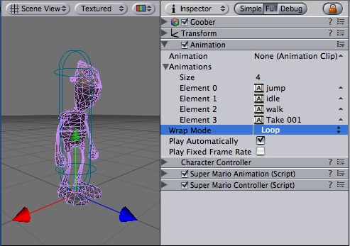
The Animation inspector
| Property: | Function: |
|---|---|
| The default animation that will be played when Play Automatically is enabled. | |
| A list of animations that can be accessed from scripts | |
| How are animations played, Looping, Once, PingPong, Default | |
| Should the animation be played automatically when starting the game? | |
| Should the animation playback at fixed frame rate. This is useful for animations interacting with physics. |
See the Character Animation page on how to import and animate characters. See the Animation page on how to create simple keyframe animations inside of Unity.
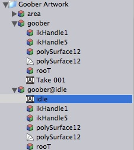
An imported animation selected in the project view
Animation clips store all animation data that can be used for animated characters or simple animations.
They contain only one property which can not be modified. The sample rate. This is the sample rate at which the clip was created. Note that Unity performs keyframe reduction when importing animations, thus this is not the number of keys.
The Audio manager allows you to tweak the maximum volume of all sounds playing in the scene. To see it choose Edit -> Project Settings -> Audio.

The Audio Manager
| Property: | Function: |
|---|---|
| The volume of all sounds playing |
Currently Doppler Velocity and Doppler Factor do not have any effect on ppc osx machines. This will be fixed in a future version of Unity.
The Tag manager allows you to set up Layers and Tags. To see it choose Edit -> Project Settings -> Tags.
The Tag Manager
| Property: | Function: |
|---|---|
| You can add new elements by typing in the last element | |
| You can add custom named User Layers |
Layers can be used to cast rays, render, or apply lighting to certain groups of objects only. You can choose the layer in the game object inspector. More information about how to use layers can be found here.
Tags are used to quickly find objects from scripts, utilizing the Tag name. When a new tag is added, you can choose it from the game object tag popup.

The Time Manager
| Property: | Function: |
|---|---|
| A framerate-independent interval that dictates when physics calculations and scripted fixed updates are performed. | |
| The speed at which time progress. Change this value to simulate bullet-time effects. A value of 1 means real-time. A value of .5 means half speed; a value of 2 is double speed. |
Fixed time stepping is very important for stable physics simulation. Not all computers are made equal, and different hardware configurations will run Unity games with varying performance. Therefore, physics must be calculated independently of the game's frame rate. Physics calculations like collision detection and rigidbody movement are performed in discrete fixed time steps that are not dependent on frame rate. This makes the simulation more consistent across different computers or when changes in the frame rate occur. For example, the frame rate can drop due to an appearance of many game onscreen, or because the user launched another application in the background.
Here's how the fixed time step is calculated. Before every frame is drawn onscreen, Unity advances the fixed time by fixed delta time and performs physics calculations until it reaches the current time. This directly correlates to the Fixed Timestep property. The smaller the value of Fixed Timestep, the more frequently physics will be calculated. The number of Fixed frames per second can be calculated by dividing 1 by Fixed Timestep. Therefore, 1 / 0.02 = 50 fixed frames per second and 1 / 0.05 = 20 fixed frames per second.
Simply put, a smaller fixed update value leads to more accurate physics simulation but is heavier on the CPU.
The Input Manager is where you define all the different input axes and game actions for your project.
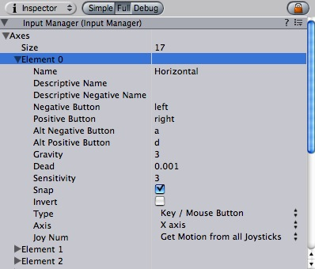
The Input Manager Inspector
To see the Input Manager choose: Edit -> Project Settings -> Input
| Property: | Function: |
|---|---|
| Contains all the defined input axes for the current project. | |
| the number of different input axes in this project. | |
| The particular axis you are currently modifying. | |
| The string that refers to the axis in the game launcher and through scripting. | |
| A detailed definition of the Positive Button function that is displayed in the game launcher. | |
| A detailed definition of the Negative Button function that is displayed in the game launcher. | |
| The button that will send a negative value to the axis. | |
| The button that will send a positive value to the axis. | |
| The secondary button that will send a negative value to the axis. | |
| The secondary button that will send a positive value to the axis. | |
| How fast will the input recenter. Only used when the type is key / mouse button | |
| Any positive or negative values that are less than this number will register as zero. Useful for joysticks. | |
| For keyboard input, a larger value will result in faster response time. A lower value will be more smooth. For Mouse delta the value will scale the actual mouse delta. | |
| If enabled, the axis value will be immediately reset to zero after it receives opposite inputs. Only used when the type is key / mouse button | |
| If enabled, the positive buttons will send negative values to the axis, and vice versa. | |
| Use Key / Mouse Button for any kind of buttons, Mouse Movement for mouse delta and scrollwheels, Joystick axis for analog joystick axes and Window movement for when the user shakes the window. | |
| Axis of input from the device (joystick, mouse, gamepad, etc.) | |
| Which joystick should be used. By default this is set to retrieve the input from all joysticks. This is only used for input axes and not buttons. |
All the axes that you set up in the Input Manager serve two purposes:
All defined axes will be presented to the player in the game launcher, where they will see its name, detailed description, and default buttons. From here, they will have the option to change any of the buttons defined in the axes. Therefore, it is best to write your scripts making use of axes instead of individual buttons, as the player may want to customize the buttons for your game.

The game launcher input window that is displayed when your built game is run
See also: Input
You can access the Physics Manager by selecting Edit -> Project Settings -> Physics.
The Physics Manager
| Property: | Function: |
|---|---|
| The amount of gravity applied to all Rigidbodies. Usually gravity acts only on the Y-axis (negative is down). Gravity is m/s^2. | |
| The default Physic Material that will be used if none has been assigned to an individual Collider. | |
| Two colliding objects with a relative velocity below this value will not bounce. This value also reduces jitter so it is not recommended to set it to a very low value. | |
| The default linear velocity, below which objects start going to sleep. | |
| The default angular (rotating) velocity, below which objects start going to sleep. | |
| The default maximimum angular velocity permitted for any Rigidbodies. The angular velocity of rigidbodies is clamped to Max Angular Velocity to avoid numerical instability with quickly rotating bodies. Because this may prevent intentional fast rotations on objects such as wheels, you can override this value for any Rigidbody by scripting Rigidbody.maxAngularVelocity. | |
| How deep in meters are two objects allowed to penetrate before the collision solver pushes them apart. A higher value will make objects penetrate more but reduces jitter. | |
| Determines how accurately joints and contacts are resolved. Usually a value of 7 works very well for almost all situations. |
The Physics Manager is where you define the default behaviors of your world.
For an explanation of Rigidbody Sleeping, read this page about sleeping.
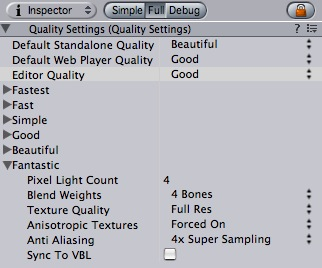
The Quality Settings
You can tune Quality Settings by choosing Edit -> Project Settings -> Quality.
| Property: | Function: |
|---|---|
| Default quality setting used for standalone players. | |
| Default quality setting used for web players. | |
| The current quality setting used in the editor for previewing. | |
| The quality setting details for different global quality settings | |
| The maximum number of pixel light counts used. If there are more lights affecting an object, the light will automatically be represented as a vertex light. | |
| How many blend weights should Unity use on a skinned mesh. 2 Bones is usually a very good tradeoff between speed and quality. | |
| Should Unity decrease the resolution of all textures. | |
| Anisotropic filtering increases texture quality when viewing the texture at a steep angle, but incurs a performance cost. You can modify Anisotropic filter level per texture, see Texture2D. | |
| Should anti-aliasing be used. This removes blocky edges but incurs a performance cost. | |
| Synchronize to screen refresh rate. This will slow down the game but avoid any tearing artifacts. |
You can adjust each of the 6 quality settings individually to fit your game. The end-user can then choose the Quality Setting in the Screen Selector of the standalone player; or you can access and modify it from scripting.
The Quality Settings are by default initialized to some good values that work across a wide range of games.
Note that Anti Aliasing and Sync To VBL currently do not live update when inside of the editor. You have to restart the editor or player to see the effect. This will be addressed in the future.
Player Settings is where you define various parameters for the final game that you will build in Unity.
The Player Settings
To see the Player Settings choose Edit -> Project Settings -> Player
| Property: | Function: |
|---|---|
| The name of your company. This is used to locate the preferences file. | |
| The name that will appear on the menu bar when your game is running and is used to locate the preferences file. | |
| Default horizontal dimension of stand-alone player window. | |
| Default vertical dimension of stand-alone player window. | |
| Default horizontal dimension of web player window. | |
| Default vertical dimension of web player window. | |
| If enabled, the "Windowed" checkbox on the Resolution Dialog will be disabled by default. | |
| If enabled, the Resolution Dialog will appear when the game is launched. | |
| Enabling this will use the alpha channel rendered in Unity for the transparency of the OSX Dashboard Widget. This allows you to make a dashboard widget with the shape of a mesh for example. | |
| If enabled, your game will continue to run if the user gives focus to another application. | |
| Reference to the image you would like to display in the Resolution Dialog window. | |
| If enabled, the Unity watermark will always be displayed in the lower-right hand corner of your game window. |
The Player Settings window is where many technical preference defaults are set. See also Quality Settings where the different graphics quality levels can be set up.
Default Web Screen Width and Default Web Screen Height determine the size used in the html file. Of course you can modify the size in the html file later.
Default Screen Width and Default Screen Height are used by the web player when entering fullscreen mode through the context menu in the web player view.

The resolution / input selector presented to end-users
You have the option of adding a custom banner image to the Screen Resolution Dialog in the Standalone Player. The maximum image size is 432 x 163 pixels. The image will not be scaled up to fit the screen selector. Instead it will be centered and cropped.
The Render Settings contain default values for a range of visual elements in your scene, like Lights and Skyboxes.
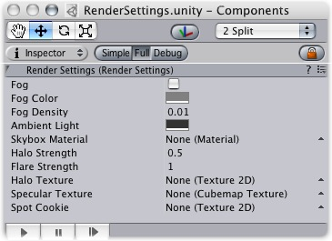
The Render Settings
To see the Player Settings choose: Edit -> Render Settings
| Property: | Function: |
|---|---|
| If enabled, fog will be drawn throughout your scene. | |
| Color of the Fog. | |
| Density of the Fog. | |
| Color of the scene's ambient light. | |
| Default skybox that will be rendered if no cameras have a skybox attached. | |
| Size of all light halos in relation to their Range. | |
| Intensity of all flares in the scene. | |
| Reference to a Texture2D that will appear as the glow for all Halos in lights. | |
| Reference to a Cube map that defines how specular highlights are drawn. If null the specular lookup is used. | |
| Reference to a Texture2D that will appear as the cookie mask for all Spot lights. |
The Render Settings is used to define some common visual aspects of all the scenes in your project. It can be a great help if your entire game takes place outdoors. You can assign a single Skybox Material in the Render Settings, and then you don't have to worry about setting any Skyboxes on your individual scene cameras.
Likewise, if you want common rendering properties across all scenes except one or two properties of a particular scene, you can override those properties by changing the settings of the individual element. Fog and Ambient properties are specific to the open scene, and do not apply to the whole project.
Enabling Fog will give a misty haze to your scene. This both increases performance on lower-end machines and adds ambience. You can adjust the look and color of the Fog with Fog Density and Fog Color, respectively.
Adding fog is often used to optimize performance by making sure that far away objects fade out and are not drawn. Please note that enabling fog is not enough to enable this performance optimization. To do that you also need to adjust your Camera's Far Clip Plane. So that geometry far away will not be drawn. It is best to tweak the fog to look correct first. Then make the Camera's far clip plane smaller until you see the geometry being clipped away before the fog fades it out.

Fog is enabled in this scene from Forest Johnson's Racing Game
Assets are the models, textures, sounds and all other "content" files from which you make your game.
This section describes Components for all asset types. For a general overview of assets, see Assets overview page.
Textures bring your meshes, particles, and interfaces to life! They are image or movie files that you lay over or wrap around your objects. As they are so important, they have a lot of properties. If reading this for the first time, jump down to Details, and return to the actual settings when you need a reference.
Which shaders you use for your objects put specific requirements on your textures, but the basic principle is that you can put any image file inside your project. If it meets the size requirements (specified below), it will get imported and optimized for game use.
This extends to multi-layer Photoshop or TIFF files - they are flattened on import, so there is no size penalty for your game.
The texture inspector looks a bit different from most others:
The top section contains a few settings, and the bottom part contains a texture preview. The changes you make to the bottom part only affect the display, and not the texture itself.
| Property: | Function: |
|---|---|
Selects how the texture is filtered when it gets stretched by 3D transformations.
| |
| Increases texture quality when viewing the texture at a steep angle. Good for floor textures | |
Selects how the texture behaves when tiled
|
Textures all come from image files in your project folder. How they are imported is specified by the texture's import settings. You change these by selecting the file texture in the project window and clicking the import settings button on the toolbar above:

This brings up the import settings dialog:
| Property: | Function: |
|---|---|
| The maximum imported texture size. A lot of artists prefer to work with huge textures - scale the texture down to a suitable size with this. | |
What internal representation is used for the texture. This is a tradeoff between size and quality. In the examples below we show the final size of a in-game texture of 256 by 256 pixels.
| |
| If enabled, an alpha transparency channel will be generated by the image's existing values of light & dark. | |
| If enabled on textures that have non-power-of-two sizes, this will scale texture up to the nearest power-of-two size at import time. For more info see Texture Sizes section below. | |
| Generates a cubemap from the texture using different generation methods. | |
| Select this to enable mip-map generation. Mip maps are smaller versions of the texture that gets used when the texture is very small on screen. For more info, see Mip Maps, below. | |
| Select this to enable per-mip-level gamma correction. | |
| Select this to avoid colors seeping out to the edge of the lower Mip levels. Used for light cookies (see below). | |
3 ways of mip map filtering is available to optimize image quality
| |
| Enable this to make the mipmaps fade to gray the mip levels progress. This is used for detail maps. | |
| The first mip level to begin fading out at. | |
| The mip level where the texture is completely grayed out | |
| Enable this to turn the color channels into a format suitable for real-time bumpmapping. For more info, see Bump Maps, below... | |
| Increase the amount of bumpyness. | |
Determine how the bumpyness is calculated
|
Unity can read the following file formats: PSD, TIFF, JPG, TGA, GIF, PNG, BMP, IFF, PICT. It should be noted that Unity can import multi-layer PSD & TIFF files just fine. They are flattened automatically on import but the layers are maintained in the assets themselves, so you don't lose any of your work when using these file types natively. This is important as it allows you to just have one copy of your textures that you can use from Photoshop, through your 3D modelling app and into Unity.
Ideally texture sizes should be powers of two on the sides. These sizes are as follows: 2, 4, 8, 16, 32, 64, 128, 256, 512, 1024 or 2048 pixels. The textures do not have to be square, i.e. width can be different from height.
It is possible to use other (non power of two) texture sizes with Unity. Non power of two texture sizes work best when used on GUI Textures, however if used on anything else they will be converted to an uncompressed RGBA 32 bit format. That means they will take up more video memory (compared to DXT compressed textures) and will be slightly slower to load. In general you'll use non power of two sizes only for making GUI.
Non power of two texture assets can be scaled up at import time using a Scale NonPower2 Sizes Up option in the import settings. Then Unity will scale texture contents up to the next power of two, and in the game they will behave just like any other texture. So they can still be compressed and very fast to load.
When mapping a 2D texture on to a 3D model, some sort of wrapping is done. This is called UV mapping and is done in your 3D modelling app. Inside Unity, you can scale and move the texture using Materials. Scaling bump & detail maps are especially useful
Mip Maps are a list of progressively smaller versions of an image, used optimise performance on real-time 3D engines. Object that are far away from the camera use the smaller textures. Using mip maps uses 33% more memory, but not using mipmaps can be a huge performance loss. You should always you mipmaps for in-game textures; the only exceptions are textures that will never be minified (e.g. GUI textures).
Bump maps are used by bump map shaders to make low-polygon models look as if they contain more detail. Unity uses normal maps encoded as RGB images. You also have the option to generate a normal map from a grayscale height map image.
If you want to do a terrain, you normally use your main texture to show where there are grass, rocks sand, etc... If your terrain has a decent size, you will end up with a very blurry terrain. Detail textures hide this fact by fading in small details as your main texture get up close.
When drawing detail textures, a neutral gray is invisible, white makes the main texture twice as bright and black makes the main texture completely black.
If you want to use texture for reflection maps (e.g. use Reflective builtin shaders), you need to use Cubemap Textures.
An interesting way to add a lot of visual detail to your scenes is to use cookies - greyscale textures you use to control the precise look of in-game lighting. This is fantastic for making moving clouds and giving an impression of dense foilage. The Light page has more info on all this, but the main thing is that for textures to be usable for cookies, the following properties need to be set:
For spotlight cookies, use the following settings:
| Property: | Function: |
|---|---|
| Any setting that has an alpha channel | |
| Enabled | |
| Enabled | |
| Enabled |
For directional lights, use the following settings:
| Property: | Function: |
|---|---|
| Any setting that has an alpha channel | |
| Enabled | |
| Enabled | |
| Disabled |
For point lights, you need to use Cube Maps. To generate one, either make six textures and assign them as detailed in Cubemap Textures or generate on with the following settings:
| Property: | Function: |
|---|---|
| Any setting that has an alpha channel | |
| Any other setting than None. | |
| Enabled | |
| Enabled | |
| Disabled |
Meshes make up a large part of your 3D worlds. You don't build your meshes in Unity, but in another application.
In Unity, we have done everything in our power to make this process as simple as possible. There are a lot of details, but the following should hold:
Unity supports importing from a lot of 3D applications. Choose the one you're working with below:
Unity can read .FBX, .3DS, .dxf and .obj files, so if your program can export to this format you're home free. FBX exporters for popular 3D packages can be found here.
Unity will attempt to hook up materials to your imported scenes - Basically, just place textures in a folder called 'Textures' next to the sccene file, or in any folder above it.

To access the importing settings for a 3D scene file, click the Settings button in the project window, or control-click a scene file and select Import Settings....

| Property: | Function: |
|---|---|
| Enable this to generate material files near the found texture files. When enabled, different scenes will share the same material settings when they use the same textures. For the precise rules, see Material Generation below. | |
| This will generate materials per scene, so only this scene uses them. | |
| This will not generate materials at all. | |
| Unity's physics system expects 1 meter in the game world to be 1 unit in the imported file. If you like to model at a different scale, this is the place to fix it. | |
| If this is enabled, your meshes will be imported with Mesh Colliders automatically attached. This is recommended for background geometry, but never for geometry you move about. For more info see Colliders below. | |
| Enable this to automatically generate normals for the imported geometry. If enabled, the Smoothing Angle sets how sharp an edge has to be to be treated as a hard edge. | |
| Use this if Lightmapped shaders pick up wrong UV channels. | |
Controls how animations are imported.
| |
| When using IK or simulation in your animation package, enable this. Unity will convert to FK on import. | |
| Perform keyframe reduction on imported animations. You should always use this, as it takes less memory and is faster. | |
| If you have multiple animations in a single file, here you can split it into multiple clips. |
Materials are found based on the following rules:
If Unity can't find the Material, it tries to create one from the texture:
Unity features two primary types of colliders: Mesh colliders and Primitive colliders. Mesh colliders are imported together with your geometry and are used for background objects. When you enable Meshes Have Colliders in the import settings, the mesh becomes solid as far as the physics system is concerned.
If you are moving the object around (a car for example), you can not use mesh colliders. Instead, you will have to use primitive colliders. In this case you should disable the Meshes Have Colliders setting.
Animations are automatically imported from the scene. For more details about animation import options see Character-Animation chapter.
Audio Clips are used by Audio Sources to represent the audio asset imported into Unity.

The Audio Clip
Audio Clips just work. The only thing you should have to do with them is reference them from within Audio Sources.
Sound assets only have 3 read-only properties.
| Property: | Function: |
|---|---|
The format the sound is stored in. Unity supports 4 raw formats and one compressed.
| |
| The duration of the sound file in seconds. | |
| The sampling frequency of the file. |
Unity currently supports the following file formats:
Stereo sounds are always played as is. They are not faded out over distance and they do not have panning. This makes them optimal for music and ambient sources.
Mono sounds always fade out over distance and do panning. This is good for all effects requiring 3D positional sound.
For music you should always use the ogg vorbis format. The frequency should be 44khz and it should be stereo. (44 khz is recommended since playback will be faster than with 22khz)
Short audio clips (eg. foot steps, bullet explosion) you should use AIFF or WAV with mono and either 22khz or 11khz. Usually you should not use 44khz since that takes up too much disk space and the quality difference is not hearable.
Long audio clips should use ogg vorbis and mono. A good rule of thumb is that if a sound file is more than 200k uncompressed, then it makes sense to use ogg vorbis and stream the sound instead (when using ogg vorbis, always choose 44khz).
Fonts can be created or imported for drawing using either the GUI Text the Text Mesh components.
To add a font to your project you need to place the .ttf file in your Assets folder. Unity will then automatically import it. You have to make sure that the font has a .ttf extension otherwise Unity will not recognize it.
To change the size of the font, highlight the Font in the project view and choose Assets -> Import Settings....
This brings up the dialog where where you can choose the size of the Font, and setting whether all font characters should be converted to upper case or lower case. Case conversion is optional, but using only lower or upper case characters reduces generated texture size.
The imported Fonts show some properties in the Inspector but they can not be modified since they are automatically generated from the imported .ttf file.
Unity has full Unicode support. Unicode text allows you to display German, French, Danish or Japanese characters that are usually not supported in an ASCII character set. You can also enter a lot of different special purpose characters like arrow signs or the option key sign, if your font supports it.
When you import a font file you can select which characters the imported font should support. You should make sure Unicode is selected. Now create a new GUIText while the font is selected and voila you can enter Unicode characters in the GUIText's text field.
Sometimes you want to display Unicode characters from a script. The Javascript and C# compilers fully support Unicode based scripts. You simply have to save your scripts with UTF-16 encoding.
In Unitron, this can be done by opening the script and choosing Text -> Text Encoding -> Unicode (UTF 16). Now you can add Unicode characters to a string in your script and then assign the string to a GuiText.
Flare objects are the source assets for lens flares. You choose a flare from the project folder for a lens flare in your scene - like you choose textures for your mesh objects.
Unity ships with a couple of pre-made flares in Standard Assets package. If you want to add one of these to your scene, Use a Lens Flare component.
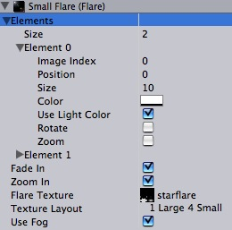
The Flare asset inspector
| Property: | Function: |
|---|---|
| A list of images making up the flare. For a description, see Flare Element properties below. | |
| If enabled, the flare will fade up to full strength when it becomes visible and fade out when it doesn't. | |
| If enabled, the elements scale up when the flare becomes visible and scale down again when it doesn't. | |
| A texture containing images used by this flare. | |
How the individual flare element images are laid out inside the flare texture.
| |
| If enabled, the flare will fade away with distance fog. This is used for small flares. |
A flare consists of multiple elements, arranged along a line. One point of the line goes through the lens flare object in the scene, the other goes through the screen center. The elements are strung out on this line.
Each element of a flare can be tweaked in a number of ways. Each index of the Elements array reveals the following properties:
| Property: | Function: |
|---|---|
| Which sub-image to use from the flare texture (see flare textures section below). | |
| The position of the element along the line going from the light position, through the screen center (0 = light, 1 = screen center) | |
| The size of the element | |
| Color tint of the element | |
| Pick up the color from a light source? | |
| If enabled, bottom of the image will always face the center of the screen, making the image spin as the flare moves around on the screen. | |
| Make the flare size dependent on brightness? |
For performace reasons all elements of one flare share the same texture. This texture contains a collection of the different images that get combined. The Texture Layout defines how the images are laid out in the flare texture. The following layouts are available:


Render Textures are textures that are created and updated at runtime. Most often you create a Render Texture and setup one of your Cameras to render into it. Then you can use the contents of render texture in Materials just like you would use a regular texture. For example, Water prefabs in Unity Pro standard assets use render textures to make realtime reflections and refractions.
The Render Texture Inspector showing the contents of water reflection texture (hence the view is upside down)
The Render Texture inspector displays the current contents of Render Texture in realtime and can be an invaluable debugging tool for effects that use render textures.
| Property: | Function: |
|---|---|
| Set the size of the render texture in pixels. |
A very quick way to make a live arena-camera in your game:
Red tinted box displays live view from the selected camera
Materials are attached onto Game Objects with Mesh or Particle Renderers. They play an essential part in defining how your object is displayed.
Inspector for a simple material. It uses Diffuse shader which has only two properties - a color and a texture.
The properties of any Material will change depending on the selected Shader. These are the most often used properties.
| Property: | Function: |
|---|---|
| The shader that will be used by the material. | |
| Any kind of color tint can be applied. Use white for no tint. | |
| The Texture that will be displayed. |
Materials are used to place Textures onto your Game Objects. You cannot add a Texture directly without a material. Therefore, you create a material, assign a shader, and choose the texture to display along with it. For more information on materials, take a look at the Manual's page about Materials.
After you create your material, the first thing you should decide is which Shader to use. You choose it from the drop-down Shader menu.
The Shader drop-down menu
You can choose any shader that exists in your project's assets folder or one of the builtin shaders. You can also create your own shaders. For more information on shaders, take a look at the Shaders documentation.
Depending on the type of shader selected, a number of different properties can appear in the inspector. Some of the shaders can have quite a lot of them, like the Water shader below.
The Reflective&Refractive Water shader has a lot of properties!
The different types of shader properties are:
The placement of the textures can be altered by clicking Placement button near the texture property. It brings up texture offset and scale foldout.
A texture made to tile 4x2 times by using Scale entries in the Placement foldout
| Property: | Function: |
|---|---|
| Slides the texture around. | |
| Scales the texture along the different axes. |
Cubemap Texture is a collection of six square textures, put onto faces of imaginary cube. Most often they are used to display infinitely faraway reflections on objects, similar to how Skybox displays faraway scenery in the background. Reflective builtin shaders in Unity use Cubemaps to display reflection.
You create Cubemap in one of two ways:
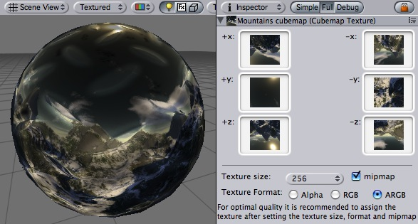
A mountains cubemap displayed as reflection on the sphere
| Property: | Function: |
|---|---|
| Textures for right and left cube faces. | |
| Textures for top and bottom cube faces. | |
| Textures for front and back cube faces. | |
| Edge length in pixels that will be used for a single cubemap face. Source textures will be internally scaled to fit this size, there is no need to scale them manually. | |
| Enable to create mipmaps. | |
| Format of the created cubemap. |